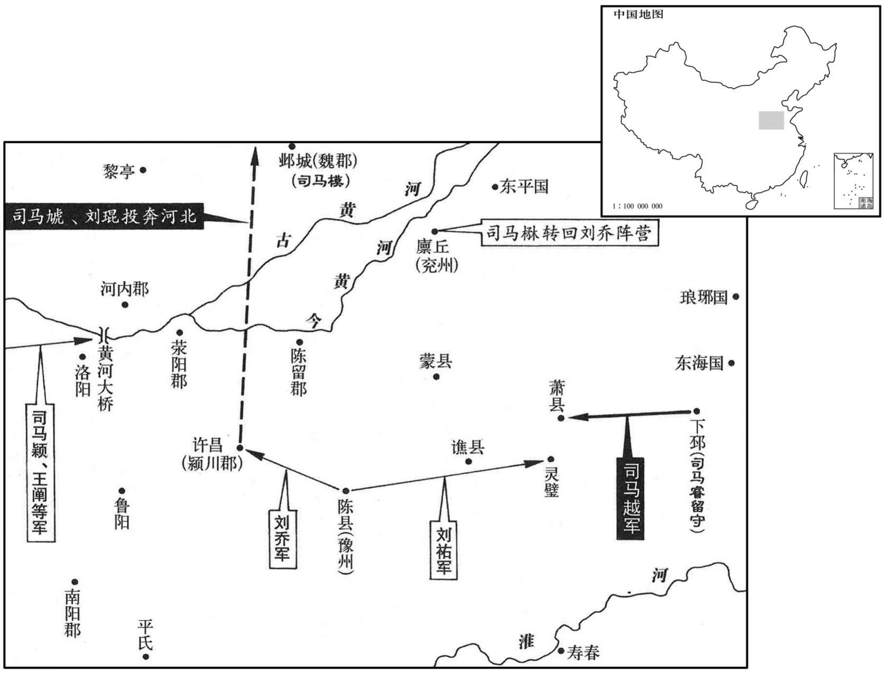
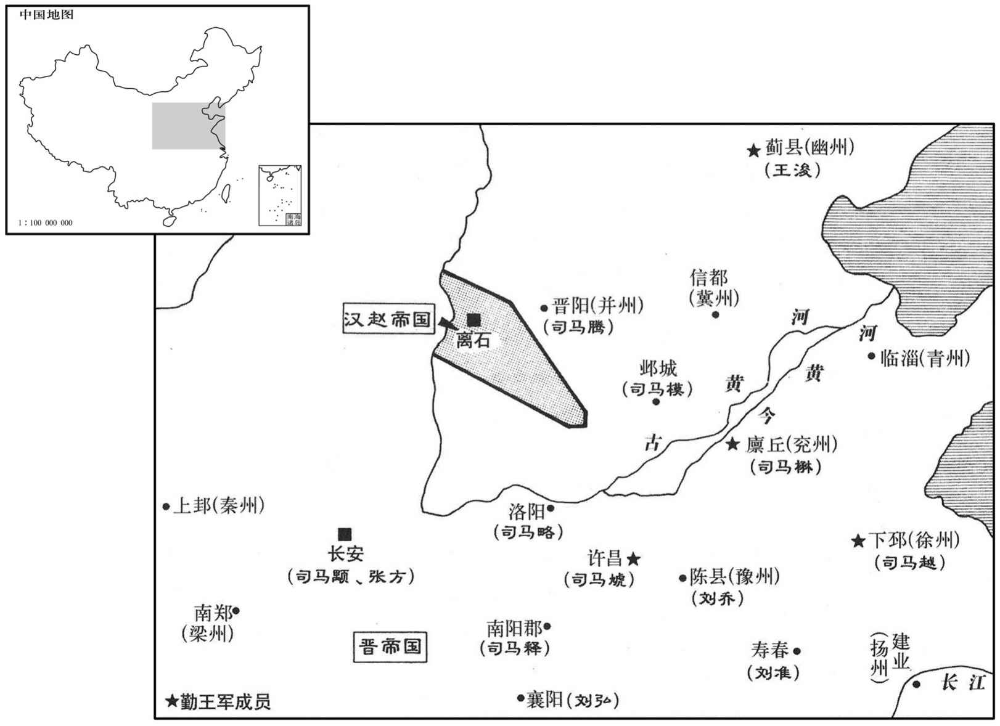
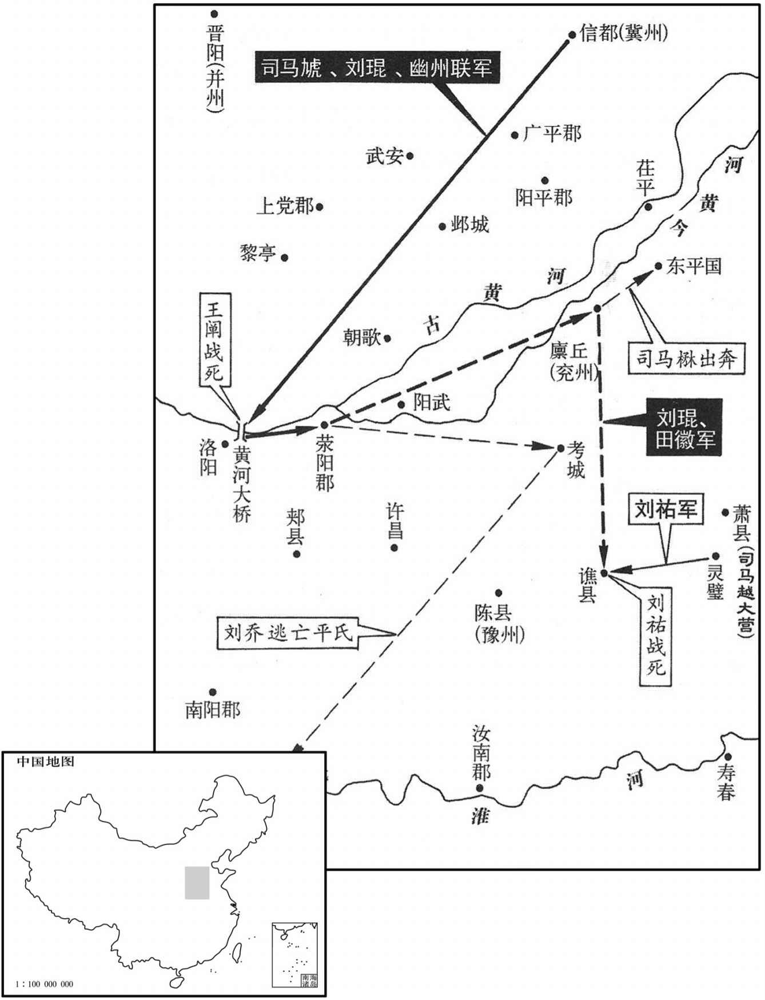
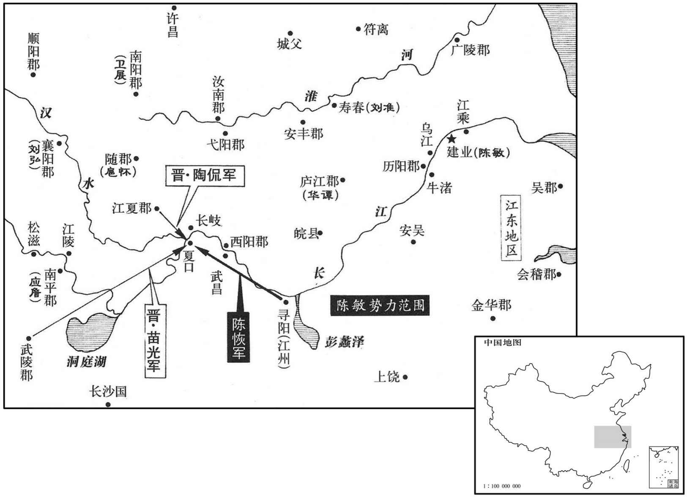
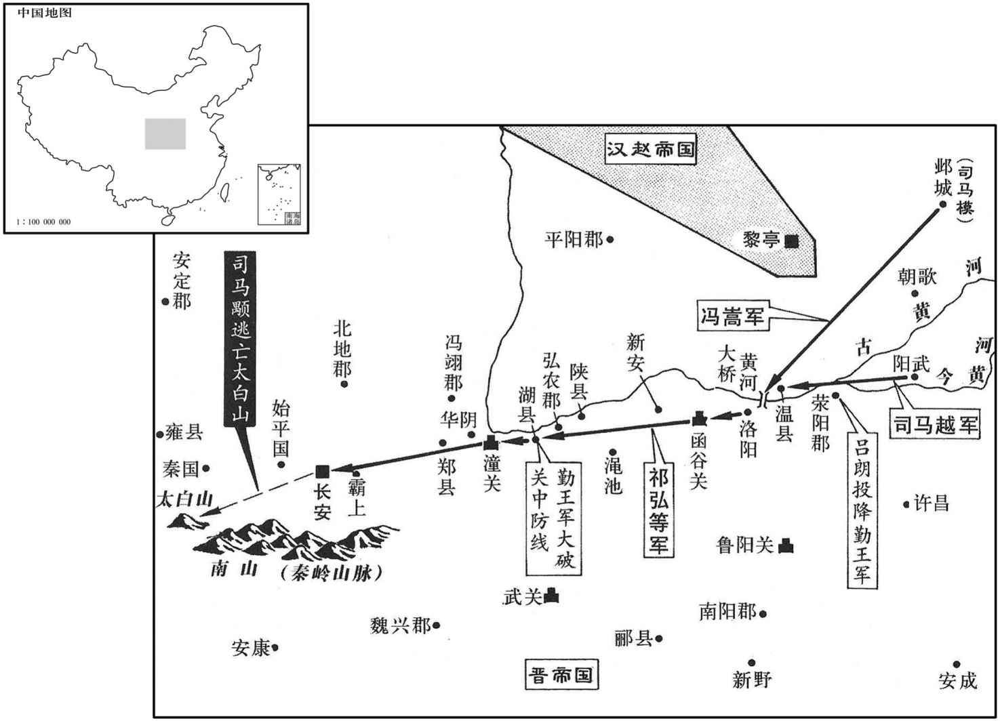
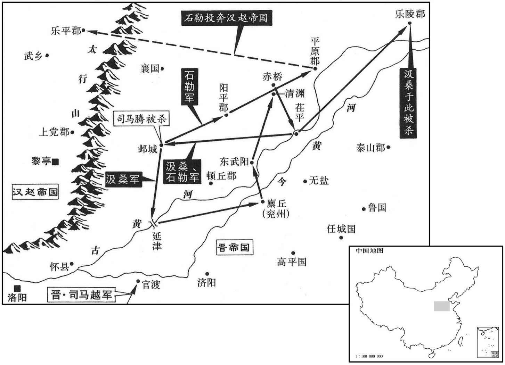
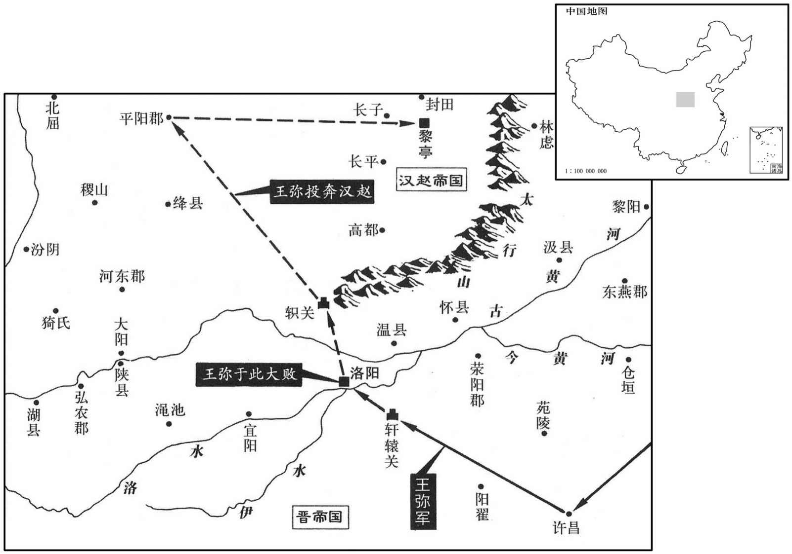
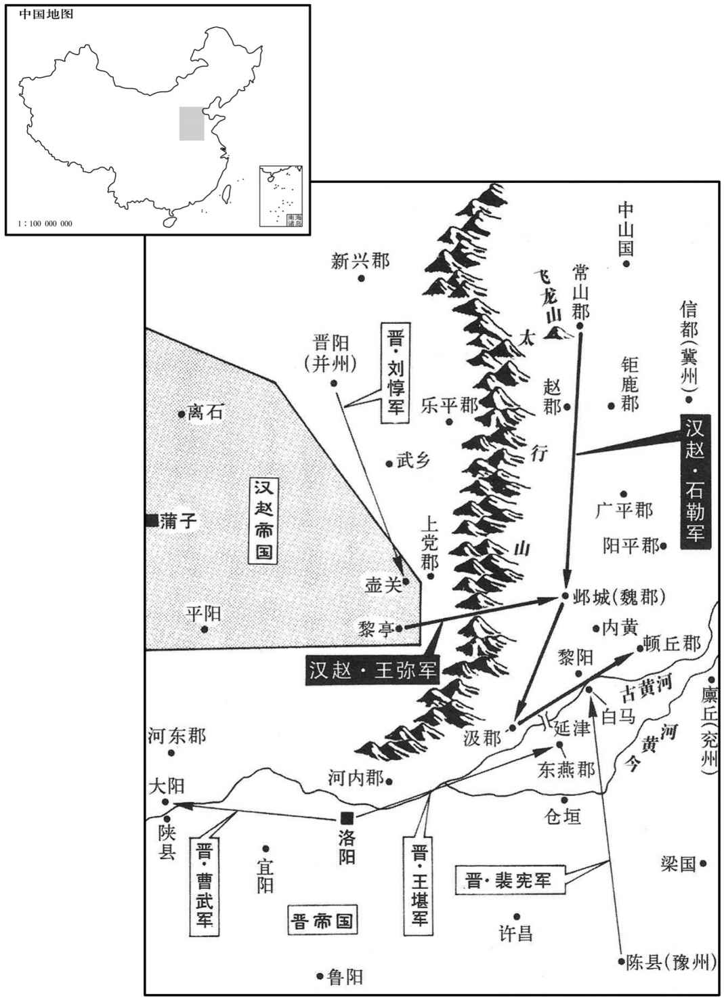

卷次与人物目录 / 卷86
资治通鉴 · 卷第八十六【晋纪八】
公元305年至公元308年 · 原文、白话与胡三省注
本页按胡注本编排保存全卷内容。白话采用本站所据译本，未可靠对应的内容另列说明；事件标题用于定位，并非原书文字。
本卷共109段原文，106段有译文对应，3段缺译或待核对。
卷第八十六【晋纪八】起旃蒙赤奋若（乙丑），尽着雍执徐（成辰），凡四年。
卷首原文与注释
孝惠皇帝下
公元305年 · 晋孝惠皇帝永兴二年
永兴二年〔（乙丑、三○五）〕
本年事件索引（现代整理）
- 张方废黜羊皇后
- 皇甫重孤城坚守多年，羊后复位后仍未获救
- 王戎去世
- 张轨讨降韩稚，击败鲜卑若罗拔能
- 刘渊攻司马腾，拓跋部出兵救援并斩汉将
- 司马越檄召诸州讨张方，诸王推其为盟主
- 公师藩起兵响应成都王颖，石勒与汲桑随军
- 晋大赦
- 司马越任琅邪王睿镇守下邳，刘乔起兵反对范阳王虓
- 河间王颙重新起用成都王颖，命其镇守邺城
- 河间王颙命刘乔、张方等联合讨伐司马越一党
- 刘弘劝诸王停战以保晋室，双方都不听从
- 刘乔攻克许昌，刘琨等败走河北
- 刘弘以宽信治江汉，斩杀劝其从横谋事的辛冉
- 彗星现于北斗
- 平昌公司马模派宋胄进取河桥
- 刘暾力谏留台拒绝赐死羊后，羊后得以保全
- 成都王颖进据洛阳，吕朗等驻军荥阳
- 刘琨联合王浚等击败刘乔，司马越势力转强
- 陈敏据历阳叛晋，自任扬州刺史并攻取江州
- 陈敏割据江东，顾荣等名士表面受任而暗中观望
- 河间王颙遣张光讨陈敏，刘弘派陶侃等守夏口
- 刘弘信任陶侃，不因流言猜忌其忠
- 陶侃以运粮船作战舰，击败陈恢、钱端
- 刘弘拒绝卫展建议，仍表彰张光功绩
- 离石饥荒，刘渊迁驻黎亭就食
夏，四月，张方废羊后。
夏季，四月，张方废黜羊皇后。
游楷等攻皇甫重，累年不能克，〔游楷等自太安二年攻皇甫重，至是，首尾三年。〕重遣其养子昌求救于外。昌诣司空越，越以太宰颙新与山东连和，〔事见上卷上年。〕不肯出兵。昌乃与故殿中人杨篇〔故殿中人，旧属二卫部曲者。〕诈称越命，迎羊后于金墉城。入宫，以后，以后令发兵讨张方，奉迎大驾。〔是年四月，张方废羊后。其时方已奉帝入关，盖以威令遥胁留台百官，使废羊后耳。今皇甫昌迎后入宫，欲发兵讨方，特以是起兵，非因方在洛而讨之也。〕事起仓猝，百官初皆从之；俄知其诈，相与诛昌。颙请遣御史宣诏喻重令降。〔降，户江翻；下同。〕重不奉诏。先是城中不知长沙厉王及皇甫商已死，〔长沙厉王死，见上卷上年。皇甫商死，见上卷太安二年。先，悉荐翻。〕重获御史驺人，〔因御史来宣诏，获其驺人。驺，侧鸠翻，貛御也。晋制，诸公给驺八入，下至御史，各有差。齐王融曰：「车前无八驺，何得称丈夫！」则驺盖辟车之卒。〕问曰：「我弟将兵来，欲至未﹖」驺人曰：「已为河间王所害。」重失色，立杀驺人。于是城中知无外救，共杀重以降颙。以冯翊太守张辅为奉州刺史。〔颙以破刘沈之功用张辅。〕
游楷等人攻打皇甫重，几年都没有攻克，皇甫重派他的养子皇甫昌到外边录求救援。皇甫昌拜见司空司马越，司马越因为太宰司马新近与崤山以东地区联系和解，不肯出兵。皇甫昌就与以前为殿中人的杨篇一起，伪称奉司马越的旨意，从金墉城迎出羊皇后。进入皇宫后，用皇后的命令发兵讨伐张方，尊奉迎接皇帝大驾。事情来得仓猝，朝廷各部门官员开始都跟随皇甫昌，不久知道是伪令，就一起杀了皇甫昌。司马请求派御史向皇甫重宣布诏令，命令他投降。皇甫重不遵行诏令。开始时城里不知道长沙厉王司马和皇甫商已被杀死。皇甫重抓住来宣布诏令的御史马夫，询问说：“我弟弟带兵过来，快到了吗？”马夫说：“他已被河间王司马害死了。”皇甫重大惊失色，当即杀掉马夫。这样城里知道没有外援，就一起杀了皇甫重投降。司马命冯翊太守张辅担任秦州刺史。
六月，甲子，安丰元侯王戎薨于郏。〔王戎奔郏，见上卷上年。郏，音夹。〕
六月，甲子（初四），安丰元侯王戎在郏县去世。
张辅至奉州，杀天水太守封尚，欲以立威；又召陇西太守韩稚，〔守，式又翻。〕稚子朴勒兵击辅，辅军败，死。凉州司马杨胤言于张轨曰：「韩稚擅杀刺史，明公杖钺一方，不可不讨。」轨从之，遣中督护泛瑗帅众二万讨稚，稚诣轨降。〔中督护，中军督护也。泛，音凡。瑗，于眷翻。帅，读曰率；下同。〕未几，〔几，居岂翻。〕鲜卑若罗拔能寇凉州，轨遣司马未配击之，斩拔能，俘十余万口，威名大振。〔史言张轨能尊主攘夷以致强盛。〕
张辅到秦州，杀了天水太守封尚，想以此建立权威。又要召陇西太守韩稚，韩稚的儿子韩朴带兵攻打张辅，张辅的军队失败，张辅被杀死。凉州司马杨胤对张轨说：“韩稚擅自杀死刺史，您掌握一个地区的军事，不能不去征讨。”张轨听从了他的意见，派中军督护瑗率领二万人征讨韩稚，韩稚到张轨那里投降。没有多久，鲜卑人若罗拔能进犯凉州，张轨派司马宋配阻击鲜卑人，杀了若罗拔能，俘虏十多万人，声威大振。
汉王渊攻东嬴公腾，腾复乞师于拓跋猗戦，〔复，扶又翻。戦，徒河翻。〕卫操劝猗戦助之。猗戦帅轻骑数千救腾，斩汉将綦毋豚。〔毋，音无。綦毋，复姓。北狄传：匈奴国人有綦毋氏、勒氏，皆勇健，好反叛。考异曰：后魏书桓帝纪及刘渊传，皆云「渊南走蒲子」。按晋载记，渊无走蒲子事，下云「自离石迁黎亭」，盖后魏书夸诞妄言耳。〕诏假猗戦大单于，〔单，音蝉。〕加操右将军甲申，猗戦卒，子普根代立。
汉王刘渊攻打东赢公司马腾，司马腾又向拓跋猗求援助，卫操劝拓跋猗帮助司马腾。拓跋猗率领几千轻装的骑兵去救援司马腾，杀了汉将綦毋豚。诏令把拓跋猗封为大单于，加封卫操右将军。甲申（二十四日），拓跋猗去世，儿子拓跋普根代他立为大单于。
东海中尉刘洽以张方劫迁车驾，〔晋诸王国有郎中令、中尉、大农为三卿。张方劫迁车驾事见上卷上年。〕劝司空越起兵讨之。秋，七月，越传檄山东征、镇、州、郡云：「欲纠帅义旅，奉迎天子，还复旧都。」〔旧都，谓洛阳。〕东平王楙闻之，惧；长史王修说楙曰：「东海，宗室重望；今兴义兵，公宜举徐州以授之，则免于难，〔说，输芮翻。难，乃旦翻。〕且有克让之美矣。」楙从之。越乃以司空领徐州都督，楙自为兖州刺史；诏即遣使者刘虔授之。〔楙督徐州，始八十四卷永宁元年。去年，范阳王虓以苟晞行兖州，晞留许昌，未及至州，而楙自领之。〕是时，越兄弟并据方任，〔越弟略都督青州，模都督冀州。〕于是范阳王虓〔虓，虚交翻。〕及王浚等共推越为盟主，越辄选置刺史以下，〔辄，专也。〕朝士多赴之。〔朝士赴越者，不从帝在长安者也。朝，直遥翻。〕
东海中尉刘洽因为张方劫持并强行迁移皇帝车驾，劝司空司马越发兵征讨张方。秋季，七月，司马越在崤山以东的各征、镇、州、郡传布檄文说：“将集结带领正义之师，奉迎天子返回原来的都城。”东平王司马听到后，惶恐不安。长史王对司马说：“东海王是宗室中声望最高的，现在兴起正义的军队，您应当把徐州交给他，那就可避免灾难，还享有克己谦让的美德。”司马同意了。司马越就以司空兼任徐州都督，司马自任兖州刺史，朝廷诏令立即派使者刘虔正式任命。这时，司马越兄弟都各占据一方重任，于是范阳王司马和王浚等人共同推举司马越作盟主，司马越则选择人才安排刺史以下的职务，朝廷的士人大多都投奔到司马越那里。
成都王颖既废，〔颖废见上卷上年。〕河北人多怜之。〔颖镇邺，初有时誉；后虽以骄侈致祸，河北之人厌乱而思旧，故多怜之。〕颖故将公师藩等自称将军，起兵于赵、魏，众至数万。初，上党武乡羯人石勒，有胆力，善骑射。〔武乡县，晋置，属上党郡；后石勒分置武乡郡。刘昫曰：唐潞州；武乡县，汉河东之垣县也。唐辽州榆塺县，分晋武乡县置。载记曰：勒，匈奴别部羌渠之冑。又匈奴传曰：北狄人居塞内者，有十九种，羯其一也。羯，居谒翻。〕并州大饥，建威将军阎粹说东嬴公胜〔说，输芮翻。〕执诸胡于山东，卖充军实。勒亦被掠，卖为茌平人师欢奴，〔茌平县，前汉属东郡，后汉属济北国，晋属平原国。应劭曰：在茌山之平地者也。意其地当在唐齐州、博州界。刘昫曰：茌平县并入唐博州聊城县。被，皮义翻。师古曰：茌，音仕疑翻。〕欢奇其状貌而免之。欢家邻于马牧，勒及与牧帅汲桑结壮士为群盗。〔帅，所类翻。〕及公师藩起，桑与勒帅数百骑赴之。〔帅，读曰率。〕桑始命勒以石为姓，勒为名。〔石勒始此。〕藩攻陷郡县，杀二千石、长吏，〔长，知两翻。〕转前，攻邺。平昌公模甚惧；范阳王虓遣其将苟晞救邺，与广平太守谯国丁绍共击藩，走之。〔汉武帝置平干国，宣帝改为广平国；后汉光武省属巨鹿郡；魏文帝黄初二年复置广平郡；唐为洛州之地。〕
成都王司马颖被废黜后，河北人大多很怜悯他。司马颖过去的部将公师藩等人自称将军，在赵、魏地区起兵，人数达到几万。当初，上党武乡县羯人石勒，有胆识力量，善于骑马射箭。并州严重饥荒，建威将军阎粹向东赢公司马腾献计，把各族胡人抓到崤山以东地区，卖了以后补充军粮。石勒也被抓住，卖给仕平人师欢作奴隶，师欢认为他的相貌奇特而放了他。师欢与放马场为邻，石勒就与放牧的首领汲桑聚集壮士成为强盗团伙。等公师藩起兵后，汲桑和石勒率领几百骑士投奔到公师藩那里，汲桑让石勒以石作为姓，用勒作为名。公师藩攻克了一些郡县，杀了二千石俸禄的郡守、长吏，转而向前，攻打邺城，平昌公司马模非常恐惧。范阳王司马派他的部将苟去救邺城，与广平太守谯国人丁绍共同攻打并赶跑了公师藩。
八月，辛丑，大赦。
八月，辛丑（疑误），宣布大赦。
司空越以琅邪王睿为平东将军，监徐州诸军事，留守下邳。〔监，工衔翻。〕睿请王导为司马，委以军事。〔考异曰：导传曰：「元帝镇下邳，请导为安东司马。」按元帝时为平东，及徙扬州，乃为安东耳。或者「平」字误为「安」，或后为安东司马，故但云司马。〕越帅甲士三万，西屯萧县；〔萧县，自汉以来属沛郡，唐属徐州。〕范阳王虓自许屯于荥阳。〔许，即许昌。〕越承制以豫州刺史刘乔为冀州刺史，以范阳王虓领豫州刺史；乔以虓非天子命，发兵拒之。虓以刘琨为司马，越以刘蕃为淮北护军，刘舆为颍川太守。〔舆、琨，蕃之子也。〕乔上尚书，列舆兄弟罪恶，因吊兵攻许，〔豫州刺史时治项。上，时掌翻。〕遣长子佑将兵拒越于萧县之灵壁，〔长，知两翻。〕越兵不能进。东平王楙在兖州，征求不已，郡县不堪命。范阳王虓遣苟晞还兖州，〔虓用苟晞为兖州刺史，见上卷上年。〕徙楙都督青州。楙不受命，背山东诸侯，与刘乔合。〔背，蒲妹翻。〕
司空司马越以琅邪王司马睿任平东将军。监徐州诸军事的职务，在下邳留守。司马睿请王导担任司马，将军队事务交给王导处理。司马越率领三万兵士，驻扎在西边的萧县。范阳王司马从许昌到荥阳驻扎。司马越奉制书让豫州刺史刘乔任冀州刺史，让范阳王司马兼任豫州刺史。刘乔认为司马来不是天子的旨意，就发兵阻止司马。司马以刘琨为司马，司马越以刘藩任淮北护军。刘舆任颍川太守。刘乔给朝廷上书，罗列刘舆兄弟的罪恶，就带兵攻打许昌，并派长子刘带兵在萧县的灵壁阻击司马越，司马越的军队不能前进。东平王司马在兖州，不停地征收赋税，征发劳役，所属郡县不能忍受。范阳王司马派苟返回兖州，调司马都督青州，司马不接受任命，背叛崤山以东的诸侯，与刘乔汇合。

太宰颙闻山东兵起，甚惧。以公师藩为成都王颖起兵，壬午，表颖镇军大将军、都督河北诸军事，给兵千人；以卢为魏郡太守，随颖镇邺，欲以抚安之。又遣建武将军吕朗屯洛阳。
太宰司马听说崤山以东战事又起，非常恐惧。因为公师藩是为成都王司马颖而起兵，壬午（二十三日），司马表奏任司马颖为镇东大将军，都督河北诸军事，配给一千兵士；任卢志为魏郡太守，随从司马颖镇守邺城，想以此抚尉并安定公师藩。又派建武将军吕朗到洛阳驻扎。

颙发诏，令东海王越等各就国，越等不从。会得刘乔上事，〔上事者，言东海王越等起兵及乔攻许拒越之事。上，时掌翻。〕冬，十月，丙子，下诏称：「刘舆迫胁范阳王虓，造构凶逆。其令镇南大将军刘弘、〔刘弘都督荆州。〕平南将军彭城王释、〔彭城王释盖代羊伊屯宛。〕征东大将军刘准，〔刘准都督扬州。〕各勒所统，与刘乔并力；以张方为大都督，统精卒十万，与吕朗共会许昌，诛舆兄弟。」释，宣帝弟子穆王权庂孙也。〔权，宣帝弟东武城侯馗之子。考异曰：刘乔传「释」作「绎」。帝纪、宗室传皆作「释」，盖乔传误。帝纪：「八月，车骑大将军刘弘逐平南将军彭城王释于宛。」弘、释传及众书皆无之。弘传但云彭城前东奔有不善之言。按弘，晋室纯臣，刘乔与范阳构难，弘犹以书各解之，以安天下，尊王室。释受王命镇宛，而弘肯更自逐之乎！据此，诏令弘、释共讨刘舆，疑无弘逐释事。帝纪必误。〕丁丑，颙使成都王颖领将军刘〔【章：甲十一行本「刘」作「楼」；乙十一行本同；孔本同；退斋校同。】〕褒等，前车骑将石超领北中郎将王阐等据河穚，为刘乔继援；进乔镇东将军，假节。
司马发布诏令，命令东海王司马越等人各自回到自己的封国，司马越等人不服从。碰巧接到刘乔的上书。冬季，十月，丙子（十八日），司马颁布诏书，声称：“刘舆逼迫威胁范阳王司马，制造事端。命令镇南大将军刘弘、平南将军彭城王司马释、征东大将军刘准，各自带领所辖军队，与刘乔并肩出力，任张方为大都督，率领十万精兵，与吕朗在许昌会合，诛讨刘舆兄弟。”司马释是宣帝司马懿侄子穆王司马权的孙子。丁丑（十九日），司马让成都王司马颖带领将军楼褒等人，前车骑将军石超带领北中郎将王阐等人据守河桥，作为刘乔的后续援军。提升刘乔为镇东将军，发给符节。
刘弘遗乔及司空越书，〔遗，于季翻。〕欲使之解怨释兵，同王奖室，皆不听。弘又上表曰：「自顷兵戈纷乱，猜祸锋生，疑隙构于群王，灾难延于宗子。〔难，乃旦翻。〕今日为忠，明日为逆，翩其反而，〔言是非反复之易，冏、乂、颖、颙之事诚如此。〕互为戎首。〔言迭为兴戎之首也。〕载籍以来，骨肉之祸未有如今者也，臣窃悲之！今边陲无备豫之储，中华有杼轴之困，〔诗曰：小东大东，杼轴其空。杼，持纬器。「轴」，亦作「柚」；皆织具也。〕而股肱之臣，不惟国体，职竞寻常，〔惟，思也。职，主也。竞，争也。八尺曰寻，倍寻曰常。言所争者寻丈之间，不足为长短也。左传曰：争寻常以尽其民。〕自相楚剥。〔楚，痛也。〕万一四夷乘虚为变，此亦猛虎交鬬篡效于卞庄者戈矢。〔刘、石之祸，刘弘盖知之矣。〕臣以为宜速发明诏诏越等，令两释猜嫌，各保分局。〔分，扶问翻。〕自今以后，其有不被诏书，擅兴兵马者，天下共伐之。」〔被，皮义翻；下同。〕时太宰颙方拒关东，倚乔为助，不纳其言。
刘弘给刘乔及司空司马越去信，想使他们之间消解怨恨停止军事行动，共同辅佐王室，但双方都不理会。刘弘又上奏表说：“自从近年战乱迭起，猜疑灾祸一起出现，疑忌仇隙在亲王们之间出现，灾难祸患延续于宗室后代身上，今天是忠于王室的，明天就成了反叛王室，是非反复变化无常，轮流成为兴起战事的首领。有历史记载以来，骨肉相残的灾祸没有像现在这样的，我对此感到十分悲伤！现在边疆没有预防发生变动的储备，中原却有相当的困厄，辅助王室的重要大臣，不考虑国家的命运，却以竞争长短为能事，自相残杀。万一四边夷人乘虚而制造变乱，这也正是两个猛虎相争斗而自然成为卞庄的猎物。我认为应该赶快发布公开诏书，命令司马越等人，解除猜忌仇怨，各自保持自己所分管的职位和封地。从今以后，如果有不接受诏令，擅自动用军队挑起事端的人，全国共同来讨伐他。”当时太宰司马刚开始进抵关东地区，要倚靠刘乔作为帮助，因而不采纳刘弘的进言。
乔乘虚袭许，破之。刘琨将兵救许，不及，遂与兄舆及范阳王虓俱奔河北；琨父母为乔所执。刘夕以张方残暴，知颙必败，乃遣参军刘盘为都护，〔尽护行营诸将为都护，督护则止督一军耳。〕帅诸军受司空越节度。〔帅，读曰率。〕
刘乔乘虚袭击许昌，一举攻克。刘琨带兵救援许昌，已经来不及，于是和兄刘舆以及范阳王司马一起逃奔河北。刘琨的父母被刘乔抓住。刘弘根据张方的残暴，知道司马一定要失败，便派参军刘盘为都护，带领所辖各军队接受司马越的指挥。
时天下大乱，夕专督江、汉，威行南服。〔南服，南方也；谓之服者，责以服事天子为职。〕谋事有成者，则曰「某人之功」，如有负败，则曰「老子之罪」。每有兴发，〔兴发，谓兴师动众，调发财赋。〕手书守相，〔守，手又翻。相，息亮翻。〕丁宁款密。所以人皆感悦，争赴之，咸曰：「得刘公一纸书，贤于十部从事。」〔州有部从事，部管内诸郡。〕前广汉太守辛冉说弘以从横之事，弘怒，斩之。〔益州之破，辛冉去罗尚从刘弘，冉以事尚者事弘，犹将不免于诛，况以从横说之邪！史言刘弘忠纯。说，输芮翻。从，子容翻。〕
这时天下大乱，刘弘专门督管江、汉地区，威势及于南方边远地区。谋划事情成功了，就说是某人的功劳。如果遇到失败，则称是自己的责任。每当兴师动众，亲笔写信给负责官员，详细叮咛嘱咐。所以大家都很感动和舒畅，争相到他那儿。大家都说：“能够得到刘公一纸亲笔信，胜过做十个部从事。”前广汉太守辛冉向刘弘游说割据称霸的事，刘弘发怒，把他杀了。
有星孛于北斗。〔字，蒲内翻。〕
有异星出现在北斗星旁。
平昌公模遣将军宋冑趣河桥。〔模自邺遣冑进兵。趣，七喻翻。〕
平昌公司马模派将军宋胄向河桥进兵。
十一月，立节将军周权，诈被檄，〔诈，言被司空越檄也。〕自称平西将军，复立羊后。洛阳令何乔攻权，杀之，复之水羊后。〔复，扶又翻。〕太宰颙矫诏，以羊后屡为奸人所立，遣尚书田淑敕留台赐后死。〔时苟藩、刘暾、周馥居留台。〕诏书屡至，司隶校尉刘暾等上，奏，〔暾，他昆翻。上，时掌翻。〕固执以为：「羊庶人门户残破，废放空宫，门禁峻密，无缘得与奸人构乱；众无愚智，皆谓其冤。今杀一枯穷之人，而令天下伤惨，何益于治！」〔治，直吏翻。〕颙怒，遣吕朗收暾；〔考异曰：暾传云：「颙遗陈颜、吕朗帅骑五千收暾。」按暾匹夫，安用五千骑！盖朗时在洛，颙敕使收暾耳。说者欲大其事，故云尔。〕暾奔青州，依高密王略。然羊后亦以是得免。
十一月，立节将军周权，假称收到檄文，自称为平西将军，又重新立羊皇后。洛阳令何乔攻打周权，把他杀了，又废黜羊皇后。太宰司马假称诏令，根据羊皇后多次被坏人拥立，派尚书田淑命令留守台署赐羊皇后死。诏书几次传到，司隶校尉刘暾等人上奏，坚持认为：“羊庶人门庭早已破败，废黜放逐空宫，宫门禁卫戒备森严，没有条件能够与坏人勾结而制造变乱，大家无论愚蠢还是聪明，都说她很冤枉。现在杀这样一个潦倒穷愁的人，而使天下悲伤，对社会安定有什么好处？”司马发怒，派吕朗拘捕刘暾，刘暾投奔青州，依靠高密王司马略。但羊皇后也因此而得以免于一死。
十二月，吕朗等东屯荥阳，成都王颖进据洛阳。
十二月，吕朗等向东在荥阳驻扎，成都王司马颖进兵据守洛阳。
刘琨说冀州刺史太原温羡，使让位于范阳王虓。〔魏收曰：袁绍、曹操为冀州，治邺；魏、晋治信都。杜佑曰：治房子。说输芮翻。〕虓领冀州，遣琨诣幽州乞师于王浚；浚以突骑资之，〔突骑，天下精兵。燕人致枭骑，助汉高祖以破项羽。光武得渔阳、上谷突骑以平河北。考异曰：琨传曰：「得突骑八百人。」按刘乔传云：「琨率突骑五千济河攻乔。」疑八百太少，或因下文迎东海王之数，致有此误。今阙疑。〕击王阐于河上，杀之。琨遂与虓引兵济河，斩石超于荥阳。刘乔自考城引退。〔考城县属陈留郡，前汉梁国之菑县也，章帝更名；晋省。后魏置考阳县及北梁郡；北齐郡县并废，为城安县；隋改曰考城县，属梁郡；至唐，属曹州。〕虓遣琨及督护田徽东击东平王楙于廪丘，〔廪丘县，前汉属济阴，晋属濮阳郡，为兖州刺史治所。贤曰：廪丘故城在今濮州雷泽县北。〕楙走还国。琨、徽引兵东迎越，击刘佑于谯；佑败死，乔众遂溃，乔奔平氏。〔考异曰：帝纪云：「乔奔南阳。」按地理地：南阳无平氏县。武帝分南阳置义阳郡，有西平氏县。或者南阳有东平氏而非县与！今按前汉书地理志：平氏县属南阳郡。晋书地理志，平氏县属义阳郡。平氏之上有厥西县。沈约宋书地理志：南义阳太守领厥西、平氏二县。且曰：厥西今，二汉无；晋太康地志属义阳。以此证之，盖后人传写晋书者，误以厥西之「西」字联平氏而书之。其实晋义阳之平氏，即汉南阳之平氏也。帝纪所谓「乔奔南阳」，以汉古郡大界书之也。刘昫曰：唐申州义阳县，汉南阳郡平氏县之义阳乡与唐州之桐柏、平氏二县，皆汉南阳平氏县地。〕司空越进屯阳武，〔阳武县，汉属河南郡，晋属荥阳郡，唐属郑州。〕王浚遣其将祁弘帅突骑鲜卑、乌桓为越先驱。〔帅，读曰率；下同。〕
刘琨向冀州刺史太原人温羡游说，让他把职位让给范阳王司马。司马兼领冀州后，派刘琨到幽州向王浚求兵。王浚派精锐骑兵帮助司马，在黄河上袭击王阐，把王阐杀了。刘琨于是和司马率兵渡黄河，在荥阳杀了石超。刘乔从考城率兵撤退。司马派刘琨和都护田徽向东在廪丘攻打东平王司马，司马逃归封国。刘琨、田徽带兵向东迎接司马越，在谯地攻打刘，刘兵败阵亡，刘乔的军队于是溃散，刘乔逃奔平氏县。司空司马越进军到阳武驻扎，王浚派他的部将祁弘带领鲜卑、乌桓精锐骑兵作为司马越的前锋。

初，陈敏既克石冰，〔事见上卷太安二年。〕自谓勇略无敌，有割据江东之志。其父怒曰：「灭我门者，必此儿也！」遂以忧卒。敏以丧去职。司空越起敏为右将军、前锋都督。越为刘佑所败，〔败，补迈翻。〕敏请东归收兵，遂据历阳叛。〔历阳县，汉属九江郡，魏改九江曰淮南，晋因之。今和州，即历阳县之地。宋白曰：县南有历水，故曰历阳。〕吴王常侍甘卓，弃官东归，〔晋诸王国，大国置左、右常侍各一人。考异曰：卓传云：「州举秀才，为吴王常侍。讨石冰，以功赐爵都亭侯。东海王越引为参军，出补离狐令。弃官东归，遇陈敏。」敏传云：「吴王常侍甘卓自洛至。」按卓为常侍，不应讨石冰；为离狐令，不应目洛至。今从敏传。〕至历阳，敏为子景娶卓女，〔为，于伪翻。〕使卓假称皇太弟令，拜敏扬州刺史。敏使弟恢及别将钱端等南略江州，弟斌东略诸郡，〔斌，音彬。〕扬〔【章：甲十一行本「扬」上有「江州刺史应邈」六字；乙十一行本同；孔本同；张校同；退斋校同。】〕州刺史刘机、丹杨太守王旷皆弃城走。〔时扬州刺史盖与丹杨太守同治秣陵。〕
当初，陈敏战胜石冰后，自以为勇猛谋略没有对手，产生在江东割据的想法。他父亲生气地说：“使我们家族灭绝的，一定是这个儿子！”于是忧郁而死。陈敏因为丧事而离职。司空司马越起用陈敏为右将军、前锋都督。司马越被刘打败，陈敏请求收兵东归，于是占据历阳反叛。吴王常侍甘卓，抛弃官职东归，到历阳，陈敏为自己的儿子陈景娶甘卓的女儿，并让甘卓伪称皇太弟的命令，任命陈敏为扬州刺史。陈敏派弟弟陈恢以及部将钱端等人向南攻打江州，弟弟陈斌向东攻打各郡，扬州刺史刘机，丹阳太守王旷都弃城逃跑。
敏遂据有江东，以顾荣为右将军，贺循为丹杨内史，周閗为安丰太守，〔安丰县，后汉属庐江郡。魏分庐江为安丰郡，其地为唐之寿州安丰、霍丘县。閗，墟里翻。〕凡江东豪杰、名士，咸加收礼，为将军、郡守者困十余人；或有老疾，就加秩命。循诈为狂疾，得免；乃以荣领丹杨内史。閗亦称疾，不之郡。敏疑诸名士终不为己用，欲尽诛之。荣说敏曰：「中国丧乱，胡夷内侮，观今日之势，不能复振，百姓将无遗种。〔说，输芮翻。丧，息浪翻。种，章勇翻。〕江南虽经石冰之乱，人物尚全，荣常忧无孙、刘之主〔孙、刘，谓孙权、刘备。〕有以存之。今将军神武不世，勋效已着，带甲数万，舳舻山积，〔汉武帝纪：舳舻千里。注云：舳、船后持柂处。舻，船前刺棹处。又汉律名船方长为舳舻。此言山积，盖取汉律之义。〕若能委信君子，使各尽怀，散蔕芥之嫌，〔张晏曰：蔕芥，刺鲠也。师古曰：蔕，音丑介翻。〕塞谗谄之口，则上方数州，可传檄而定；〔上方数州，谓扬州以西荆、江、豫、益等州也。塞，悉则翻。〕不然，终不济也。」〔【章；甲十一行本「也」下有「倅乃止」三字；乙十一行本同；孔本同；张校同；退斋校同。】〕敏命僚佐推己为都督江东诸军事、大司马、楚公，加九锡，列上尚书，〔上，时掌翻。〕称被中诏，，〔被，皮义翻。〕自江入沔、汉奉；迎銮驾。
陈敏于是占据了江东地区，任命顾荣为右将军、贺循为丹阳内史、周为安丰太守，凡是江东地区的豪族英杰、名士，都加以收揽以礼相待，其中担任将军、郡守的有四十多人。如果有年老、有病的，也封给一定的给别。贺循假装疯病，得以逃脱，就让顾荣兼任丹阳内史。周也称病而不到郡。陈敏怀疑各位名士最终不能为自己服务，想把他们全部杀掉。顾荣对陈敏说：“中原丧乱动荡，胡人、夷人欺辱内地，看今天的趋势，国家不会再重新振兴，百姓将难以生存下去。江南地区虽然经过石冰的叛乱，但百姓与财物都还健全，我常常对没有孙权、刘备那样的领袖来使江南保存感到忧虑。现在您超凡威武举世无双，功绩已经显赫，有数万武士，高大的战舰排列如群山。如果能在君子中获得信任，让他们心情舒畅，解开他们心中小小的疑忌，堵塞住谗言陷害或阿庚奉承之人的嘴，那么长江上游的几个州，都能用传布檄文的方式稳定，不然，终究不能成功。”陈敏让下属推举自己为都督江东诸军事、大司马，封为楚公、加九锡重礼，列上尚书，声称直接接到皇帝的诏令，从长江进入沔水，汉水流域，迎接皇帝大驾。
太宰以张光为顺阳太守，帅步骑五千诣荆州讨敏。刘弘遣江夏太守陶侃、武陵太守苗光屯夏口，又遣南平太守汝南应詹督水军以继之。太宰司马以张光任顺阳太守，率领步兵骑兵五千人到荆州讨伐陈敏。刘弘派江夏太守陶侃、武陵太守苗光在夏口驻扎，又派南平太守汝南人应詹督领水军来支援陶侃等人。

太宰颙以张光为顺阳太守，〔顺阳县，前汉曰博山，后汉明帝更名顺阳，属南阳郡；至建安中，割南阳右壤为南乡郡；晋太康中，立顺阳郡，以南乡为县；唐邓州之临湍、菊潭县，皆顺阳郡地。〕帅步骑五千诣荆州讨敏。刘夕遣江夏太守陶侃、武陵太守苗光屯夏口，〔夏，户雅翻。〕又遣南平太守婆南应詹督水军以继之。
本段缺少可靠对应白话，原文完整保留；未使用生成译文。
侃与敏同郡，〔侃与敏皆庐江人。〕又同岁举吏。〔同岁举赴京师。〕随郡内史扈怀〔随县，汉属南阳郡，春秋之随国也。晋武帝分南阳立义阳国，后又分义阳立随郡，隋为汉东郡，唐为隋州。〕言于弘曰：「侃居大郡，统强兵，脱有异志，则荆州无东门矣！」弘曰：「侃之忠能，吾得已久，必无是也。」侃闻之，遣子洪及兄子臻诣弘以自固，弘引为参军，资而遣之。〔既引为参军，又以货物资送而遣其归。〕曰：「贤叔征行，君祖母年高，便可归也。匹夫之交，尚不负心，况大丈夫乎！」
陶侃与陈敏是同郡人，又同年被荐举为官吏。随郡内史扈怀对刘弘说：“陶侃在大郡任太守，统领强兵，倘若有异心，荆州就失去东大门了！”刘弘说：“陶侃的忠心和才能，我了解他已很久了，一定不会这样。”陶侃听说后，派儿子陶洪和侄子陶臻到刘弘那儿，以使自己的地位稳固，刘弘作用陶洪等二人为参军，发给钱物让他们回去，说：“你们贤德的叔叔要征战出行，而祖母年事已高，你们应该回去。村野匹夫互相交往，尚且不负心，何况大丈夫呢！”
敏以陈恢为荆州刺史，寇武昌，弘加侃前锋督护以御之。侃以运船为战舰，〔舰，户黯翻。〕或以为不可。侃曰：「用官船击官贼，何为不可！」侃与恢战，屡破之；又与皮初、张光、苗光共破钱端于长岐。〔据张光传，长岐之战，光设伏于步路，苗光为水军，藏舟船于沔水，则长岐当在江夏郡界。〕
陈敏让陈恢任荆州刺史，进犯武昌，刘弘让陶侃兼任前锋都护去抵御。陶侃以一般运输船作为战舰，有人认为不行。陶侃说：“用官船来打官贼，有什么不行？”陶侃与陈恢交战，多次把陈恢打败。又和皮初、张光、苗光在长岐共同打败钱端。
南阳太守卫展说弘曰：「张光，太宰腹心，公既与东海，宜斩光以明向背。」〔背，蒲妹翻。〕弘曰：「宰辅得失，岂张光之罪！危人自安，君子弗为也。」乃表光殊勋，乞加迁擢。
南阳太守卫展对刘弘说：“张光是太宰司马的心腹，您既然倾向于东海王司马越，应该杀张光来表明您的立场。”刘弘说：“太宰的得失，怎么是张光的罪过，危害别人使自己安全，君子是不作这种事的。”于是表奏张光的功勋，请求朝廷提拔。
是岁，离石大饥，汉王渊徙屯黎亭，〔续汉志：上党郡壶关县有黎亭，书西伯戡黎即此。〕就邸阁谷；留太尉宏守离石，使大司农卜豫运粮以给之。
这一年，离石地区灾荒严重。汉王刘渊迁到黎亭驻扎，使用邸阁粮谷，让太尉刘宏留守离石，派大司农卜豫运粮供给他。
公元306年 · 晋孝惠皇帝光熙元年
光熙元年〔（丙寅、三○六）六月，帝还洛阳，始改元；此犹是永兴三年。〕
上传原文的注释括号有异常，字符原样保留；无法可靠划分的段落默认全文显示。
本年事件索引（现代整理）
- 日食
- 张方阻止河间王颙与司马越和解，颙继续留守关中
- 毕垣等离间郅辅与河间王颙，郅辅供出张方谋反
- 刘琨献张方首级，吕朗投降，司马越派兵迎惠帝还洛阳
- 刘伯根起兵攻青州，兵败被杀，王弥转为流寇
- 李毅病逝后，其女李秀率宁州军民坚守州城击退夷兵
- 范长生受李雄礼遇，出任丞相
- 祁弘击败河间王颙，护送惠帝返回洛阳
- 贾疋等起兵击杀颙将，关中诸郡转而归附司马越
- 李雄在成都称帝，建立大成并制定官制
- 日食
- 司马越出任太傅，王浚等分镇河北、荆州与关中
- 成都王颖被捕后遭幽禁，公师藩兵败被杀
- 晋进封司马腾、司马模为东燕王、南阳王
- 刘舆杀害成都王颖及其二子，秘不发丧
- 司马越任用刘舆主持军国事务，刘舆荐刘琨镇守并州
- 晋惠帝猝死，皇太弟司马炽即位为怀帝
- 怀帝在东堂听政，群臣感叹重见武帝朝风气
- 日食
- 司马越召河间王颙入朝，南阳王模派人途中杀害颙
- 温羡任左光禄大夫、领司徒，王衍任司空
- 惠帝葬于太阳陵
- 司马腾率并州流民南下就食，刘琨募兵进驻晋阳
春，正月，戊子朔，日有食之。
春季，正月，戊子朔（初一），出现日食。
初，太弟中庶子兰陵缪播〔靡幼翻，又莫六翻，姓也。〕有宠于司空越；播从弟右卫率胤，太宰颙前妃之弟也。越之起兵，遣播、胤诣长安说颙，令奉帝还洛，〔说，输芮翻；下因说、复说、迎说同。〕约与颙分陕为伯。〔陕，失冉翻。〕颙素信回放兄弟，即欲从之。张方自以罪重，恐为诛首，〔以剽掠洛都，劫天子西迁也。〕谓颙曰：「今据形胜之地，国富强，奉天子以号令，谁敢不从，柰何拱手受制于人！」颙乃止。及刘乔败，颙惧，欲罢兵，与山东和解，恐张方不从，犹豫未决。
当初，太弟中庶子兰陵人缪播受到司马越的宠信。缪播堂弟右卫率缪胤，是太宰司马的前妃的弟弟。司马越起兵，派缪播、缪胤到长安劝说司马，让他侍奉惠帝返归洛阳。并相约与司马分地而治，共同辅佐王室。司马一直信任看重缪播兄弟，当时就想听从他们的劝说。张方认为自己罪行很重，担心成为被诛杀的首犯，就对司马说：“现在我们占据形势险要的地方，国富兵强，挟天子发布号令，谁敢不服从，怎么能拱手被别人控制？”司马听后打消了与司马越联合的念头。等到刘乔兵败，司马畏惧，想停止军事行动，与崤山以东地区和解，但又耽心张方不听从，而犹豫不决。
方素与长安富人郅辅亲善，以为帐下督。〔方传云：初，方从山东来，甚微贱，郅辅厚相供给；及贵，甚亲昵之。〕颙参军河间毕垣，尝为方所侮，因说颙曰：「张方久屯霸上，闻山东兵盛，盘桓不进，〔颙遣方与吕朗会刘乔攻许，方屯霸上未进而刘乔败。马融曰：盘桓，旋也。〕宜防其未萌。其亲信郅辅具佑其谋。」缪播、缪胤复说颙：「宜急斩方以谢，山东可不劳而定。」〔复，扶又翻。〕颙使人召辅，垣迎说辅曰：「张方欲反，人谓卿知之。王若问卿，何辞以对﹖」辅惊曰：「实不闻方反，为之柰何﹖」垣曰：「王若问卿，但言尔尔；〔尔尔，犹言如此如此也。〕不然，必不免祸。」辅入，颙问之曰：「张方反，卿知之乎﹖」辅曰：「尔。」颙曰：「遣卿取之，可乎﹖」又曰：「尔。」颙于是使辅送书于方，因杀之。辅既昵于方，〔昵，尼质翻。〕持刀而入，守阁者不疑。方火下发函，辅斩其头。还报，颙以辅为安定太守。送方头于〔【章：甲十一行本「于」下有「司空」二字；乙十一行本同；孔本同；张校同；退斋校同。】〕越以请和；越不许。
张方平素和长安豪富郅辅亲近要好，让他担任帐下督。司马的参军河间人毕垣，曾经受到张方的侮辱，于是劝司马说：“张方在霸上驻兵很久了，听说崤山以东地区军队强盛，所以徘徊不前，应该在他萌生反心之前做好防备。张方的亲信郅辅对他的谋划全部了解。”缪播、缪胤又对司马进行劝说：“应当迅速杀了张方向天下谢罪，崤山以东地区不用兴兵就可以平定。”司马派人召郅辅，毕垣迎上前对郅辅说：“张方想谋反，大家都说你知道这事，亲王如果问你，你将如何回答？”郅辅吃惊地说：“的确没有听说张方谋反，这怎么办？”毕垣说：“亲王如果问你，你只能这样说，不然的话，一定免不了灾祸。”郅辅入府，司马问他说：“张方谋反，你知道吗？”郅辅说：“是的。”司马说：“派你去抓他，行吗？”郅辅又说：“行。”司马于是派郅辅给张方送信，然后趁机杀掉张方，郅辅与张方关系亲密，拿刀进去时，守门的兵士也不怀疑，张方在灯旁揭启信封，郅辅抽刀砍掉了他的头。回去报告，司马让郅辅任安定太守。把张方的头送给司马越请求和解。但司马越不答应。
未冑袭河桥，楼褒西走。平昌公模遣前锋督护冯嵩会宋冑逼洛阳。成都王颖西奔长安，至华阴，〔华阴县，前汉属京兆，后汉、晋属弘农郡，唐属华州。华，户化翻。〕闻颙已与山东和亲，留不敢进。吕朗屯荥阳，刘琨以张方首示之，遂降。〔降，户江翻。〕司〔【章；甲十一行本「司」上有「甲子」二字；乙十一行本同；孔本同；张校同。】〕空越遣祁弘、宋冑、司马纂帅鲜卑西迎车驾，〔帅，读曰率。〕以周馥为司隶校尉、假节，都督诸军，屯渑池。〔渑，弥兖翻。〕
宋胄袭击河桥，楼褒向西逃窜。平昌公司马模派前锋督护冯嵩会同宋胄进逼洛阳。成都王司马颖向西逃奔长安，到达华阴，听说司马已经和崤山以东和解，便停下不敢前进。吕朗在荥阳驻扎，刘琨拿张方的头给他看，于是吕朗就投降了。司空司马越派祁宏、宋胄、司马纂带领鲜卑人向西迎接皇帝大驾，任周馥为司隶校尉，掌持符节，都督诸军，在渑池驻扎。
三月，惤令刘伯〔【章：甲十一行本「伯」作「柏」；乙十一行本同；孔本同；张校同。】〕根反，〔惤县，自汉以来属东莱郡，拓跋魏省。魏收地形志：东牟郡黄县有惤城。师古曰惤，音坚。〕众以万数，自称惤公。王弥帅家僮从之，〔帅，读曰率。〕柏根以弥为长史，弥从父弟桑为东中郎将。〔从，刀用翻。〕柏根寇临淄，〔青州都督治所。〕青州都督高密王略使刘暾将兵拒之；暾兵败，奔洛阳，〔暾，他昆翻。〕略走保聊城。〔聊城县，汉属东郡，晋属平原郡，唐为博州治所。〕王浚遣将讨柏根，斩之。〔将，即亮翻。〕王弥亡入长广山为群盗。〔长广县，前汉属琅邪郡，后汉属东莱郡。晋武帝咸宁三年，置长广郡，长广县属焉。隋废长广郡及县，更名胶水县；唐属莱州。〕
县令刘柏根反叛，有一万多人，自称公。王弥带领家奴僮仆跟随他，刘柏根任王弥为长史，王弥的堂弟王桑担任东中郎将。刘柏根进犯临淄，青州都督高密王司马略派刘暾带兵阻击他。刘暾兵败，逃奔洛阳，司马略退保聊城。王浚派部将讨伐刘柏根，把他杀了。王弥逃进长广山做了强盗。
宁州频岁饥疫，死者以十万计。五苓夷强盛，州兵屡败。〔五苓夷反，事始上卷太安二年。苓，力丁翻。〕使民流入交州者甚众，夷遂围州城。李毅疾病，救援路绝，乃上疏〔上，时掌翻。〕言：「不能式遏寇虐，坐待殄毙。若不垂矜恤，乞降大使，乃臣尚存，加臣重辟；〔使，疏吏翻。〕未至，毅卒。毅女秀，明达有父风，众推秀领宁州事。秀奖厉战士，婴城固守。城中粮尽，炙鼠拔草而食之。伺夷稍怠，辄出兵掩击，破之。〔伺，相吏翻。考异曰：怀帝纪：「永嘉元年年五月，建宁郡夷攻陷宁州，死者三千余人。」李雄载记曰：「南夷李毅固守不降，雄诱建宁夷使讨之。毅病卒，城陷，杀壮士三千余人，送妇女千口于成都。」王逊传云：「李毅卒，城中奉毅女固守经年。」华阳国志有毅卒年月及女秀守城事，今从之。〕
宁州几年连续灾荒流行传染病。死了十万人。五苓夷人强盛，宁州军队屡次失败。官吏百姓很多都流亡到交州，夷人趁机包围了州城。李毅身患疾病，救援的道路已断绝，于是给朝廷上奏疏，说：“不能制止强盗作恶，只好坐等一死。如果朝廷不体谅救济，那么请求派来大使，我还活着，就对我施以重刑，如果我已死，就对我戮尸惩罚。”朝廷没有答复。过了几年，李毅的儿子李钊从洛阳去探视他，还没有到，李毅就去世了。李毅的女儿李秀，精明通达具有父亲的风范，于是大家推举李秀来管理宁州事务。李秀奖励战士，环城固守。城里粮食吃完了，就烧鼠拔草作为食物。等夷人稍微有些懈怠时，就发兵突然袭击，攻破了夷人的包围。
范长生诣成都，〔自青城山诣成都也。〕成都王雄门迎，执版，拜为丞相，尊之曰范贤。
范长生到成都，成都王李雄到城门口迎接，拿着表示礼节的手板，任范长生为丞相，尊称他为范贤。
夏，四月，己巳，司空越引兵屯温。初，太宰颙以为张方死，东方兵必可解。既而东方兵闻方死，争入关，颙悔之，乃斩郅辅，遣弘农太守彭随、北地太守刁默将兵拒祁弘等于湖。五月，壬辰，弘等击随、默，大破之，遂西入关，又败颙将马瞻、郭伟于霸水，〔败，补迈翻。〕颙单马逃入太白山。〔三秦记：太白山，在武功县南，去长安三百里。俗云「武功太白，去天三百。」新唐书地理志：太白山在凤翔府郿县。〕弘等入长安，所部鲜卑大掠，杀二万余人，百官奔散，入山中，拾橡实食之。〔橡，似两翻，栩实也。尔雅曰：柞实谓之橡。贤曰：橡，栎实也。〕己亥，弘等奉帝乘牛车东还。〔晋志曰：古之贵者不乘牛车。汉武帝推恩之后，诸侯寡弱，至乘牛车，其后稍见贵重，自灵帝以来，天子至士，遂以为常乘。夫天子出入有大驾、法驾、卤簿，帝自邺奔洛，则乘犊车，自长安还洛，则乘牛车，无复出警入跸之制矣。〕以太弟太保梁柳为镇西将军，守关中。六月，丙辰朔，帝至洛阳，复羊后。〔考异曰：后传曰：「张方首至洛阳，即日复后位。」按方传首已久，不至今日。今从帝纪。〕辛未，大赦，改元。〔改元光熙。〕
夏季，四月，乙巳（十三日），司空司马越率兵到温县驻扎。起初，太宰司马以为张方一死，东方的战事一定能够停止。不久，东方的军队听说张方死了，争相进入关中，司马感到后悔，就杀了郅辅，派弘农太守彭随、北地太守刁默带兵在关东湖县阻击祁弘等人。五月，壬辰（初七），祁弘等人把彭随、刀默打得惨败，于是西进入关，又在霸水打败司马的部将马瞻、郭伟 ，司马单枪匹马逃入太白山。祁弘等人进入长安城，所部鲜卑人大肆抢掠，杀了二万多人，大臣官员们跑散，逃入山中，捡拾栎树子当饭吃。己亥（十四日）祁弘等人侍奉惠帝乘坐牛车东返。任太弟太保梁柳为镇西将军，据守关中。六月，丙辰朔（初一），惠帝到洛阳，恢复了羊皇后的地位。辛未（十六日），宣布大赦，改年号为光熙。

马瞻等入长安，杀梁柳，与始平太守梁迈共迎太宰颙于南山。〔武帝泰始二年，分扶风，置始平郡，领槐里、始平、武功、鄠、蒯城等县。南山即太白山。中南、太白，本一山也。〕弘农太守裴廙、〔廙，羊至翻，又逸职翻。〕秦国内史贾龛、安定太守贾疋等起兵击颙，斩马瞻、梁迈。疋，诩之曾孙也。〔帝即位，改扶风为秦国，以封秦王柬。龛，苦含翻。疋，音雅。贾诩生于汉末，始从李傕、郭泛，中从张绣，后归魏。〕司空越遣督护麋晃将兵击颙，〔考异曰：牵秀传云：「颙密遣使就东海王越求迎，越遣将麋晃等迎颙。」今从颙传。〕至，郑颙使平北将军牵秀屯冯翊。颙长史杨腾，诈称颙命，使秀罢兵，腾遂杀秀，关中皆服于越，颙保城而已。〔颙仅保长安城。〕
马瞻等人又回到长安，杀了梁柳，与始平太守梁迈共同在南山迎接太宰司马。弘农太守裴、秦国内史贾龛、安定太守贾疋等人起兵攻打司马，杀了马瞻、梁迈。贾疋是贾诩的曾孙。司空司马越派督护麋晃带兵攻打司马，到了郑县。司马派平北将军牵秀在冯翊驻扎。司马的长史杨腾，假称司马的命令，让牵秀停止军事行动，杨腾于是杀了牵秀，关中地区都归服司马越，司马仅仅保住长安城而已。
成都王雄即皇帝位，〔雄，字仲隽，特第三子。〕大赦，改元曰晏平，国号大成。〔考异曰：晋帝纪、三十国晋奉秋，皆云：「永兴二年六月，雄即帝位。」华阳国志：「光熙元年，雄即帝位。」后魏书序纪及李雄传，皆云「昭帝十二年，雄称帝，」即光熙元年也。十六国春秋钞：「晏平元手六月，雄即帝位。」十卜国春秋目录，雄年号，建兴二，晏平五，与华阳国志同，今从之。诸书，雄改元晏平，无大武年号；惟晋载记改元大武，无晏平年号。按雄国号大成。魏书雄传云：「雄称帝，号大成，改元晏平。」故三十国春秋误云「改年大成」，载记转写，误为「大武」。今从诸书去「大武」之号。〕追尊父特曰景皇帝，庙号始祖；尊王太后日皇太后。〔雄母罗氏，尊为王太后，见上卷永兴元年。〕以范长生为天地太师；〔太师乃有天地之号，侯景未足多怪也。群盗私立名字以相署置，可胜言哉！考异曰：华阳国志：「尊长生曰四时八节天地太师。」今从晋载记。〕复其部曲，皆不豫征税。〔复，方目翻。〕诸将恃恩，互争班位，〔将，即亮翻。〕尚书令阎式上疏，请考汉、晋故事，立百官制度；从之。
成都王李雄即皇帝位，宣布大赦，改年号为晏平，国号称为大成。追尊父亲李特为景皇帝，定庙号为始祖，把王太后尊奉为皇太后。以范长生为天地太师，让他部下的人免交赋税。各位将领都倚仗李雄的恩德，互相争抢职位。尚书令阎式上奏疏，请求按照汉朝、晋朝的旧制，建立百官制度。李雄采纳了。
秋，七月，乙酉朔，日有食之。
秋季，七月，乙酉朔（初一），出现日食。
八月，以司空越为太传，录尚书事；范阳王虓为司空，镇邺；〔考异曰：虓传「为司徒」，今从帝纪。〕平昌公模为镇东大将军，镇许昌；王浚为骠骑大将军、都督东夷、河北诸军事，领幽州刺史。〔浚恃鲜卑、乌桓以为羽翼，故使并督东夷诸军。骠，匹妙翻。〕越以吏部郎庾〔【章：甲十一行本「庾」上有「颖川」二字；乙十一行本同；孔本同；张校同；退斋校同。】〕敳为军谘祭酒，〔敳，鱼开翻。汉、魏之间，兵兴，始置军谘祭酒。〕前太弟中庶子胡母辅之为从事中郎，黄门侍郎郭〔【章：甲十一行本「郭」上有「河南」二字；乙十一行本同；孔本同；张校同；退斋校同。】〕象为主簿，鸿胪丞阮修为行参军，〔胪，陵如翻。晋列卿各置丞。行参军，在参军事之下。沈约志：晋太傅司马越府有行参军兼军，后加「长兼」字。除拜则为参军事，府版则为行参军。行参军始于蜀丞相诸葛亮府。〕谢鲲为掾。〔掾，以绢翻。〕辅之荐乐安光逸于越，〔姓谱：光姓，燕人田光之后，秦末，子孙避地，因以为奼。〕越亦辟之。敳等皆尚虚玄，不以世务婴心，纵酒放诞；敳殖货无厌，〔厌，于盐翻。〕象薄行，好招权；越皆以其名重于世，故辟之。〔史言越所辟置，采虚名而无实用。行，下孟翻。好，呼到翻。〕
八月，朝廷任司空司马越为太傅，录尚书事；任范阳王司马为司空，镇守邺城；任平昌公司马模为镇东大将军，镇守许昌；任王浚为骠骑大将军、都督东夷、河北诸军事，兼任幽州刺史。司马越任吏部郎庚为军咨祭酒，任前太弟中庶子胡母辅之为从事中郎，任黄门侍郎郭象为主簿，任鸿胪丞阮修为行参军，任谢鲲为掾。胡母辅之向司马越推荐乐安人光逸，司马越也加以任用。庚等人都崇尚虚玄空淡，不把政务放在心上，纵酒放诞，庚聚敛财物贪得无厌，郭象品行轻薄，喜好贪图权位，司马越都因为他们名重于世，所以任用他们。
祁弘之入关也，成都王颖自武关奔新野。〔新野县，汉属南阳郡，晋属义阳郡。〕会新城元公刘弘卒，司马郭劢作乱，欲迎颖为主；郭〔【章：甲十一行本「郭」上有「治中顺阳」四字；乙十一行同；孔本同；张校同；退斋校同。】〕舒奉弘子璠以讨劢，斩之。〔璠，孚袁翻。劢，莫败翻。〕诏南中郎将刘陶收颖。颖北渡河，奔朝歌，收故将士，得数百人，欲走公师藩，顿〔【章：甲十一行本「顿」上有「九月」二字；乙十一行本同；孔本同；张校同。】〕丘太守冯嵩执之，送邺；〔顿丘县，汉属东郡；武帝泰始元年，分置郡。〕范阳王虓不忍杀而幽之。公师藩自白马南渡河，〔白马县，汉属东郡，晋属濮阳国，唐为滑州治所。〕兖州刺史苟晞讨斩之。
祁弘进入关中，成都王司马从武关逃奔新野。正遇到新城元公刘弘去世，司马郭劢搞叛乱，想把司马颖迎接来作首领。郭舒拥戴刘弘的儿子刘讨伐郭劢，把他杀了。朝廷诏令南中郎将刘陶拘捕司马颖。司马颖北渡黄河，逃奔朝歌，收拢旧部将士，聚集了几百人，想去找公师藩，顿丘太守冯嵩将司马颖抓住，押送到邺城，范阳王司马不忍心杀司马颖，把他幽禁起来。公师藩从白马南渡黄河，兖州刺史苟讨伐并杀掉了公师藩。
进东嬴公腾爵为东燕王，〔燕，于贤翻。〕平昌公模为南阳王。
把东嬴公司马腾的爵位提升为东燕王，平昌公司马模的爵位提升为南阳王。
冬，十月，范阳王虓薨。长史刘舆似〔【章：甲十一行本「以」下有「成都王」三字字；乙十一行本同；孔本同；张校同；退斋校同。】〕颖素为邺人所附，秘不发丧，伪令人为台使称诏，夜，赐颖死，〔使，疏吏翻。〕并杀其二子。颖官属先皆逃散，惟卢志随从，至死不怠，收而殡之。〔从，才用翻。〕太傅越召志为军谘祭酒。
冬季，十月，范阳王司马去世。长史刘舆因为过去邺城人一直归附司马颖，所以秘不发丧，派人假装成朝廷使者传宣假诏书，夜里赐司马颖死，并且杀了他的两个儿子。司马颖的部属起先已全部逃散，只有卢志一直跟随，直到他死了也不懈怠，为司马颖收尸并安葬了他。太傅司马越宣召卢志为军咨祭酒。
越将召刘舆，或曰：「舆犹腻也，近则污人。」〔腻，女利翻。皮肤之垢，其肥滑者为腻。污，乌故翻。〕及至，越疏之。舆密视天下兵簿及仓库、牛马、器械、水陆之形，皆默识之。〔识，音志，记也。〕时军国多事，每会议，自长史潘滔以下，□知所对，舆应机辨画，〔辨者，辨析事宜；画者，为之区画也。〕越倾膝酬接，即以为左长史，军国之务，悉以委之。舆说越遣其弟琨镇并州，以为北面之重；〔说，输芮翻。〕越表琨为并州刺史，以东燕王腾为车骑将军、都督邺城诸军事，镇邺。
司马越打算召用刘舆，有人说：“刘舆这个人好比污垢，谁接近他就会沾上这污垢。”等到刘舆来了，司马越就疏远他。刘舆暗地查阅国家的军事簿籍资料以及仓库、牛马、器械、地理的情况，都默默记下来。当时军务国政事情繁多，每次讨论，从长史潘滔以下，谁也不知怎么办，而刘舆便按照情况分析策划，司马越虚心接受采纳，就让刘舆担任左长史，军务国政的事务，全部都交给刘舆。刘舆劝说司马越派他弟弟刘琨镇守并州，以增强北方的防务，司马越就表奏刘琨为并州刺史，以东燕王司马腾任车骑将军，都督邺城诸军事，镇守邺城。
十一月，己巳，夜，帝食単中毒，〔単，必郢翻。裇餈也。释名：単，并也，溲裇使合并也。蒸単、汤単之属，随形而名。食単中毒，或云越鸩之也。中，户仲翻。〕庚午，崩于显阳殿。〔年四十八。〕羊后自以于太弟炽为嫂，恐不得为太后，将立清河王覃。侍中华混曰谏曰：「太弟在东宫已久，〔炽立为皇太弟，见上卷永兴元年。华，户化翻。〕民望素定，今日宁可易乎！」即露版驰召太傅越，召太弟入宫。后已召覃至尚书合，疑变，托疾而返。癸酉，太弟即皇帝位，大赦，尊皇后日惠皇后，居弘训宫；追尊母王才人曰皇太后；立妃梁氏为皇后。
十一月，己巳（十七日），夜间，惠帝吃麦饼中毒，庚午（十八日），在显阳殿驾崩。羊皇后自以为是太弟司马炽的嫂子，担心当不成太后，打算拥立清河王司马覃。侍中华混劝谏说：“太弟在东宫已经很久了，在百姓中的声望一直是确定的，今天难道还能改变吗？”随即用不封口的公文迅速宣召太傅司马越，宣召皇太弟入宫。皇后也已宣召司马覃到尚书阁，司马覃怀疑会有变故，就称病回去了。癸酉（二十一日），太弟司马炽即皇帝位，宣布大赦，尊奉皇后为惠皇后，安排在弘训宫。追尊母亲王才人为皇太后。册立妃梁氏为皇后。
怀帝始遵旧制，于东堂听政，〔东堂，太极殿东堂也。〕每至宴会，辄与群官论众务，考经籍。黄门侍郎傅宣叹曰：「今日复见武帝之世矣！」〔复，扶又翻。〕
怀帝司马炽开始遵奉旧制，在东堂听政。每到朝廷会集群臣宴会时，就与大臣官员们商讨各种政务，探讨经典的内容。黄门侍郎傅宣感叹道：“今天又看到了武帝的时代了。”
十二月，壬午朔，日有食之。
十二月，壬午朔（初一），出现日食。
太傅越以诏书征河间王颙为司徒，颙乃就征。南阳王模遣其将梁臣邀之于新安车上，扼杀之，并杀其三子。〔模，越之弟也。意谓杀颙父子则兄弟身安而无患矣，而不知石勒、赵染之祸已伏于冥冥之中矣。新安县，汉属弘农郡，晋属河南郡。考异曰：三十国晋春秋云「东海王越杀颙」，今从颙传。〕
太傅司马越用诏书征召河间王司马为司徒，司马就前去接受征召。南阳王司马模派部将梁臣，在新安拦住司马，在车上把他掐死，并杀了他的三个儿子。
辛丑，以中书监温羡为左光禄大夫，领司徒；尚书左仆射王衍为司空。
辛丑（二十日），任中书监温羡为左光禄大夫，兼任司徒。任尚书左仆射衍为司空。
乙酉，葬惠帝于太阳陵。
两版字句有差异，建议核对原文。
己酉（二十八日），把惠帝安葬在太阳陵。
刘琨至上党，东燕王腾即自井陉东下。时并州饥馑，数为胡寇所掠，〔胡寇，谓刘渊之党也。数，所角翻。〕郡县莫能自保。州将田甄、甄弟兰、任祉、祁济、李恽、薄盛等〔州将，谓并州诸将也。将，即亮翻甄，稽延翻。任，音壬。恽，于粉翻。〕及吏民万余人，悉随腾就谷冀州，号为「乞活」，所余之户不汉二万；寇贼纵横，道路断塞。〔纵，于容翻。塞，悉则翻。〕琨募兵上党，得五百人，转鬬而前。至晋阳，府寺焚毁，〔府寺，府舍也。〕邑野萧条，聚居城市为邑。散居在外为野。〕琨抚循劳徕，流民稍集。〔劳，力到翻。徕，力代翻。〕
刘琨到上党，东燕王司马腾就从井陉东下。当时并州饥荒，多次遭到外族强盗的抢掠，各郡县没有能够保卫自己的。州属部将田甄、田甄弟田兰、任祉、祁济、李恽、薄盛等人以及官吏百姓一万多人，都随司马腾到冀州找饭吃，称为“乞活”，剩下的不足两万户。强盗窃贼到处横行，道路交通阻断。刘琨在上党召募兵卒，聚集了五百人，转战向前，到达晋阳。官府房舍焚毁，城乡一片萧条，刘琨安抚慰劳，稍微聚集了一些流民。
公元307年 · 晋孝惠皇帝永嘉元年
永嘉元年〔（丁卯、三○七）〕
上传原文的注释括号有异常，字符原样保留；无法可靠划分的段落默认全文显示。
本年事件索引（现代整理）
- 晋改元永嘉并大赦
- 周穆劝司马越复立清河王覃，司马越将其杀害
- 王弥攻掠青、徐二州，自称征东大将军
- 华谭劝顾荣等脱离陈敏，顾荣密谋响应晋军
- 陈敏派弟陈昶屯兵乌江，甘卓据守牛渚
- 顾荣、周玘等联合甘卓起兵反陈敏
- 顾荣阵前倒戈，陈敏兵败被杀，陈氏遭诛灭
- 陈敏首级送抵京师，顾荣等避开司马越征召返乡
- 朱伺称战场取胜靠忍耐，助江夏太守御西阳夷
- 晋追复杨太后尊号，改葬并追谥
- 晋立豫章王司马诠为皇太子并大赦
- 司马越不满怀帝亲政，出镇许昌
- 晋分封司马略、司马模、司马腾分镇荆州、关中、邺城
- 汲桑、石勒攻陷邺城，司马腾被杀，邺宫焚毁
- 成汉军攻陷汉中并迁徙当地百姓入蜀
- 石勒与苟晞在平原、阳平间交战，司马越驻军官渡声援
- 琅邪王司马睿任安东将军，镇守建业
- 苟晞大破汲桑，汲桑退守清渊
- 晋析荆州、江州八郡设置湘州
- 司马睿入建业，王导延揽顾荣、贺循以安抚江东士人
- 苟晞再败汲桑，汲桑与石勒分路逃走
- 苟晞执法严酷，斩杀犯禁的舅表弟
- 石勒说服张纤督等胡部首领归附刘渊
- 石勒骗取张伏利度部众，率众归附刘渊
- 日食
- 和郁任征北将军，镇守邺城
- 王衍任司徒，安排弟王澄、族弟王敦分镇荆、青二州
- 田甄、田兰等为司马腾报仇，斩杀汲桑
- 刘寔任太尉，高光任尚书令
- 司马越囚禁密谋拥立清河王覃的吕雍等人
- 司马越出任丞相并兼领兖州，苟晞改镇青州
- 苟晞以严刑立威，击败魏植流民军
- 刘灵、王弥兵败后投降刘渊
- 李钊死守宁州待援，朝廷任命王逊为刺史
- 拓跋禄官去世，弟猗卢统领三部并与慕容廆通好
春，正月，癸丑，大赦，改元。
春季，正月，癸丑（初二），宣布大赦，改年号为永嘉。
吏部郎周穆，太傅越之姑子也，与其妹夫御史中丞诸葛玫〔玫，谟杯翻。〕说越曰：「主上之为太弟，张方意也。〔成都王颖之废，河间王颙立帝为皇太弟，故以为张方之意。〕清河王本太子，〔清河王，齐王冏立为太子，经废者数矣。〕公宜立之。」越不许。重言之，〔重，直用翻。〕越怒，斩之。
吏部郎周穆是太傅司马越姑母的儿子，他与妹夫御史中丞诸葛玫劝司马越说：“皇上当时成为太弟，是张方的意图。清河王本来是太子，您应当拥立他。”司马越不同意。他们又向司马越说，司马越发怒，把他们杀了。
二月，〔【张：「月」下脱「东莱」二字。】〕王弥寇青、徐二州，自称征东大将军，攻杀二千石。太傅越以公交车令东莱鞠羡为本郡太守，〔晋志，公交车令，属卫尉。〕以讨弥，弥击杀之。
二月，王弥在青、徐二州作乱，自称征东大将军，攻杀郡守。太傅司马越让公车令东莱人鞠羡担任本郡太守，以讨伐王弥，王弥把他打死了。
陈敏刑政无章，不为英俊所附；子弟凶暴，所在为患；顾荣、周閗等忧之。庐江内史华谭遗荣等书曰：「陈敏盗据吴、会，命危朝露。〔言若朝露之栖草上，见日即晞，不得久也。华，户化翻。遗，于季翻。〕诸君或剖符名郡，或列为近臣，而更辱身奸人之朝，〔朝，直遥翻；下同。〕降节叛逆之党，不亦羞乎！吴武烈父子皆以英杰之才，继承大业。〔吴谥孙坚曰武烈皇帝。〕今以陈敏凶狡，七弟顽穴，欲蹑桓王之高踪，蹈大皇之绝轨，〔孙策追谥长沙桓王，孙权谥大皇帝。穴，而陇翻。蹑，尼辄翻。〕远度诸贤，犹当未许也。〔度，徒洛翻。〕皇舆东返，〔谓自长安还洛阳也。〕俊彦盈朝，〔才过千人曰俊。彦，对士也。〕将举六师以清建业，诸贤何颜复见中州之士邪！」〔复，扶又翻。〕荣等素有图敏之心，及得书，甚惭，密遣使报征东大将军刘准，〔使，疏吏翻。〕使发兵临江，己为内应，剪发为信。准遣扬州刺史刘机等出历阳讨敏。
陈敏处理刑罚政事都无章法，英杰们都不附从他。他的子弟凶恶残暴，当地把他们看作祸患。顾荣、周等人对此感到忧虑。庐江内史华谭给顾荣等人去信说：“陈敏窃据吴郡、会稽地区，性命像早晨的露水一样危险。你们或者拿着朝廷的符节在外统领名郡，或者曾为朝廷的近侍之臣，却玷污自己转而投身于奸邪的伪朝，变节投降于叛逆的败类，不耻辱吗？吴武烈皇帝孙坚父子都是以英俊杰出的才能，继承大业。现在以陈敏的凶恶狡猾，七个弟弟的刁顽庸劣，想追随桓王孙策的高绝的足迹，踩着大皇帝孙权的非凡的轨道。认真思量一下各地群贤，都不会答应。现在皇帝车驾已东返洛阳，俊杰英才充满朝廷，将要动用六师来清理建业，你们还有什么脸重新见中州的人士呢？”顾荣等人一直有除掉陈敏的想法，等见到这封信后，非常羞惭，秘密派使者向征东大将军刘准报告，让他发兵到江边，自己作为内应，剪掉头发作为记号。刘准派遣扬州刺史刘机等人从历阳出发讨伐陈敏。
敏使其弟广武将军昶将兵数万屯乌江，〔沈约志：广武将军，晋江左置。盖始于此时。晋置乌江县，属淮南郡，即乌江亭长檥船待项羽之地以名县。宋白曰：乌江县，汉东城县地，晋太康六年，始于东城界置乌江县。昶，丑两翻。〕历阳太守宏屯牛渚。敏弟处知顾荣等有贰心，劝敏杀之，敏不从。〔考异曰：敏传云：「弟昶劝杀荣。」按晋春秋：「敏临死谓处曰：『我负卿！』」时昶已先死。今从晋春秋。〕
陈敏派他弟弟广武将军陈昶带领数万兵马在乌江县驻扎，历阳太守陈宏在牛渚驻扎。陈敏弟陈处得知顾荣等人有二心，劝陈敏杀掉他们，陈敏不同意。
昶司马钱广，周同郡人也，密使广杀昶，宣言州下已杀敏，敢动者诛三族。广勒兵朱雀桥南；敏遣甘卓讨广，坚甲精兵悉委之。顾荣虑敏之疑，故往就敏。敏曰：“卿当四出镇卫，岂得就我邪！”荣乃出，与周共说甘卓曰：“若江东之事可济，当共成之。然卿观兹事势，当有济理不？敏既常才，政 令反覆，计无所定，其子弟各已骄矜，其败必矣。而吾等安然坐受其官禄，事败之日，使江西诸军函首送洛，题曰‘逆贼顾荣、甘卓之首’，此万世之辱也！”卓遂诈称疾，迎女，断桥，收船南岸，与、荣及前松滋侯相丹杨纪瞻共攻敏。陈昶的司马钱广是周的同郡人，周秘密地让钱广杀了陈昶，并宣称州城已杀掉陈敏，有敢乱动者诛杀三族。钱广带兵停在朱雀桥南，陈敏派甘卓征讨伐钱广，把坚固的铠甲和精兵全都给了甘卓。顾荣考虑到陈敏的怀疑，所以就到陈敏那里。陈敏说：“你应该四处走走镇定人心来保卫我。怎么能到我这儿来呢？”顾荣于是就出去，与周一起劝说甘卓道：“如果江东地区的事情能够成功，我们就应该共同努力将事办成。但是你分析一下事情的趋势，能够成功吗？陈敏才能平平，政令反覆无常，计略不确定，他的儿子兄弟个个骄纵自负，他一定要失败。而我们却安心地接受担任他的官职俸禄，等事情失败的时候，假如让长江以西地区各支军队把我们的首级装在盒子里送到洛阳，上边写着‘叛逆贼寇顾荣、甘卓的首级’，这真是万世的耻辱啊！”甘卓于是假装称病，接回女儿，截断桥的交通，把船收回到南岸，与周、顾荣以及前松滋侯相丹扬人纪瞻一起攻打陈敏。
昶司马钱广，周閗同郡人也，閗密使广杀昶，宣言州下已杀敏，〔扬州刺史治建业，故谓建业为州下。〕敢动者诛三族。广勒兵朱雀桥南；〔朱雀桥在建业宫城之南，跨秦淮水。世传晋孝武建朱雀门，上有两铜雀，故桥亦以此得名。余谓朱雀桥自吴以来有之，盖取前朱雀之义，非晋孝武之寺有此名也。朱雀桥，亦曰大桁。〕敏遣甘草讨广，坚甲精兵悉委之。顾荣虑敏之疑，故往就敏。敏曰：「卿当四出镇卫，〔谓镇安人心，乃所以卫敏也。〕岂得就我邪！」荣及出，与周閗共说甘草曰：〔说，输芮翻。〕「若江东之事可济，当共成之。然卿观兹事势，当有济理不﹖〔不，读曰否。〕敏既常才，政令反复，计无所定，其子弟各已骄矜，其败必矣。而吾等安然坐受其官禄，事败之日，使江西诸军函首送洛，〔江西诸军谓刘准所遣临江者也。〕题曰『逆贼顾荣、甘草之首』，此万世之辱也！」卓遂诈称疾，迎女，断桥，收船南岸，〔桥，即朱雀桥也。建业城在秦淮水北，故卓收船傍南岸。断，丁管翻。〕与閗、荣及前松滋侯相丹杨丹杨瞻共攻敏。〔松滋县，属庐江郡，后汉省；晋属安丰郡。刘昫曰：唐寿州霍山县，汉松滋县地。今江陵府松滋县，乃是吴乐乡之地，晋氏南渡后，以松滋流民侨立松滋县，非古松滋也。〕
本段缺少可靠对应白话，原文完整保留；未使用生成译文。
敏自帅万余人讨卓，军人隔水语敏众曰：「本所以戮力陈公者，正以顾丹杨、周安丰耳；〔敏以顾荣为丹杨太守，周閗为安丰太守，故以称之。帅，读曰率。语，牛倨翻。〕今皆洪矣，汝等何为！」敏众狐疑未决，荣以白羽扇挥之，〔白羽扇，编白羽为之。〕众皆溃去。敏单骑北走，〔骑，奇寄翻。〕追获之于江乘，叹曰：「诸人误我，以至今日！」谓弟处曰：「我负卿，卿不负我！」〔谓不用处言杀顾荣等也。〕遂斩敏于建业，夷三族。于是会稽等郡尽杀敏诸弟。〔会，工外翻。〕
陈敏亲自带领一万多人征讨甘卓，甘卓手下的壮士隔水对陈敏的兵卒说：“原来所以为陈公效力，正是因为丹阳太守顾荣、安丰太守周而已，现在他们都改变了立场，你们这样是为什么？”陈敏的部众犹疑不定，顾荣挥动白羽扇，陈敏的部众都溃散离去。陈敏一个人骑马向北逃跑，在江乘被追上抓住，感叹道：“这些人耽误了我，才到了今天这个地步！”又对弟弟陈处说：“我辜负了你，你却没有辜负我！”陈敏在建业被杀，夷灭三族。这样会稽等郡把陈敏的几个弟弟也都杀了。
时平东将军周馥代刘准镇寿春。三月，己未朔，馥传敏首至京师。诏征顾荣为侍中，纪瞻为尚书郎。太傅越辟周閗为参军，陆玩为掾。玩，机之从弟弟也。〔掾，以绢翻。从，才用翻。〕荣等至徐州，闻北方愈乱，疑不进，越与徐州刺史裴盾书曰：「若荣等顾望，以军礼发遣！」荣等惧，逃归。盾，楷之兄子，越妃兄也。〔杨止衡曰：盾，徒损翻。〕
当时平东将军周馥代刘准镇守寿春。三月，己未朔（疑误），周馥把陈敏的首级送往京城。朝廷诏令征召顾荣为侍中，纪瞻为尚书郎。太傅司马越任命周为参军，陆玩为掾。陆玩是陆机的堂弟。顾荣等人到徐州，听说北方更加乱了，迟疑不前，司马越给徐州刺史裴盾去信说：“如果顾荣等人左顾右盼，就按军法遣送他们！”顾荣等人听说后非常恐惧，就逃回去了。裴盾是裴楷的儿子，司马越妃子的哥哥。
西阳夷寇江夏，〔西阳县，春秋弦子之国，汉为县，属江夏郡，晋属弋阳郡。汉和帝永元末，巫蛮反，讨降之，徙置江夏西阳诸蛮是也。沈纯曰：晋惠帝分弋阳为西阳国。刘昫曰：吴分江夏，置蕲春郡，晋改为西阳郡，唐蕲州即其地。宋白曰：光州光山县，本汉西阳县。夏，户雅翻。〕太守杨请督将议之。诸将争献方略，骑督朱伺独不言。〔将，即亮翻。骑，奇寄翻。伺，相吏翻。〕曰：「朱将军河以不言﹖」伺曰：「诸人以舌击贼，伺惟以力耳。」又问：「将军前后击贼，何以常胜﹖」伺曰：「两散共对，惟当忍之；彼不能忍，我能忍，是以胜耳。」善之。〔凡战非有智巧以出奇取胜，而以力角力者，莫过于朱伺之说矣。〕
西阳夷人进犯江夏，太守杨珉请军事官员商讨对策，官员们争相提出计策，只有骑督朱伺一个人默不作声。杨珉说：“朱将军为什么不说话？”朱伺说：“大家都是用口舌攻打贼寇，我只靠力量罢了。”杨珉说：“将军前后几次攻打贼寇，为什么能够常胜不败？”朱伺说：“两军对垒，只应当忍耐，对方不能够忍耐，而我能忍耐，所以能够战胜他们。”杨珉认为很对。
诏追复杨太后尊号；丁卯，改葬之，谥曰武掉。〔杨后遇祸，见八十二卷惠帝元康元年。〕
诏令追复杨太后的尊号，丁卯（十七日），将太后改葬，定谥号为武悼。
庚午，立清河王覃弟豫章王诠为皇太子。〔诠，且缘翻。〕辛未，大赦。
庚午（二十日），立清河王司马覃的弟弟豫章王司马铨为皇太子。辛未（二十一日），宣布大赦。
帝观〔【章：甲十一行本「观」作「亲」；乙十一行本同；张校同。】〕览大政，留心庶事；太傅越不悦，固求出藩。庚辰，越出镇许昌。〔为越杀缪播等张本。〕
怀帝司马炽亲自审察大政，对朝廷事务也很留心。太傅司马越对此不高兴，坚决要求出去作藩镇。
以高密王略为征南大将军，都督荆州诸军事，镇襄阳；南阳王模为征西大将军，都督秦、雍、梁、益诸〔【章：甲十一行本「诸」上有「四州」二字；乙十一行本同；孔本同；张校同。】〕军事，镇长安；东燕王腾为新蔡王，都督司、冀二州诸军事，仍镇邺。〔去年腾自并州徙镇邺。〕
任高密王司马略为征南大将军，都督荆州诸军事，镇守襄阳；任南阳王司马模为征西大将军，都督秦、雍、梁、益诸军事，镇守长安；封东燕王司马腾为新蔡王，都督司、冀二州诸军事，仍然镇守邺城。
公师藩既死，没桑逃还苑中，〔茌平牧苑也，桑于此起兵赴公师藩，藩死，逃还。〕更聚众劫掠郡县，自称大将军，声言为成都王报仇；〔为，于伪翻；下燕为同。〕以石勒为前驱，所向辄克，署勒讨〔【章：甲十一行本「讨」作「扫」；乙十一行本同；孔本同；张校同。】〕虏将军，遂进攻邺。时邺中府库空竭，而新蔡武哀王腾资用甚饶。腾性吝啬，无所振惠，临急，乃赐将士米各数升，帛各丈尺，以是人不为用。夏，五月，桑大破魏郡太守冯嵩，长驱入邺，腾轻骑出奔，为桑将李丰所杀。桑出成都王颖棺，〔颖之死也，卢志收殡之，今桑出而载之。〕载之车中，每事启而后行。遂烧邺宫，火旬日不灭；〔袁绍据邺，始营宫室，魏武帝又增而广之，至是悉为灰烬矣。〕杀士民万余人，大掠而去。济自延津，南击兖州。太傅越大惧，使苟晞及将军王赞讨之。
公师藩死后，汲桑逃回到苑中，转而聚众到各郡县去抢劫掠夺，自称大将军，声称要为成都王司马颖报仇，以石勒为先锋，所向披靡，又任石勒为代讨虏将军，接着进攻邺城。当时邺城里仓库已空，而新蔡武哀王司马腾用度却很奢侈。司马腾品性吝啬，部下得不到什么好处，临到军情紧急时，就赐给将士每人几升米，一丈左右的布帛，所以部下都不为他所用。夏季，五月，汲桑重创魏郡太守冯嵩，长驱直入，攻进邺城，司马腾轻装骑马出逃。被汲桑部将李丰杀死。汲桑起出成都王司马颖的棺材，装到车上，每件事都要向司马颖棺材祷告后才去办。接着焚烧了邺城王宫，大火十天都不灭。又杀掉一万多土人百姓，大肆抢掠后才离去。在延津渡过黄河，向南攻打兖州。太傅司马越非常惧怕，派苟和将军王赞去讨伐汲桑。

秦州流民邓定、訇氐等据成固，〔杨正衡曰：訇，呼宏翻；余谓訇姓，氐名。〕寇掠汉中，梁州刺史张殷遣巴西太守张燕讨之。邓定等饥窘，诈降于燕，且赂之，燕为之缓师。〔窘，渠陨翻。降，户江翻。为，于伪翻。〕定密遣訇氐求救于成，成主雄遣太尉离、司徒云、司空璜将兵二万救定，与燕战，大破之，张殷及汉中太守杜孟治弃城走。稍十余日，离等引还，尽徙汉中民于蜀。汉中人句方、白落帅吏民还守南郑。〔句，古侯翻，姓也。梁州刺史、汉中太守俱治南郑。杜佑曰：汉汉中郡故城，在唐梁州南郑县东北。〕
秦州流民邓定、訇氐等人占据成固，进犯抢掠汉中，梁州刺史张殷派遣巴西太守张燕讨伐他们。邓定等人饥饿困窘，假装向张燕投降，又贿赂张燕，张燕就为他们缓兵。邓定秘密派遣訇氐成汉求救，成汉君主李雄派太尉李离、司徒李云、司空李璜率领二万军队去救援邓定，与张燕交战，把张燕打得惨败，张殷和汉中太守杜孟治弃城而逃。十几天后，李离等人带兵回师，把汉中百姓全部迁徙到蜀地。汉中人句方、白落带领部分官吏百姓回到南郑据守。
石勒与苟晞等相持于平原、阳平间数明，大小三十余战，互有胜负。秋，七月，己酉朔，太傅越屯官渡，为晞声援。
石勒与苟在平原、阳平之间相持对垒几个月，大小三十余城，双方互有胜负。秋季，七月，己酉朔（初一），太傅司马越在官渡屯兵驻扎，声援苟。
己未，以琅邪王睿为安东将军、都督扬州．江南诸军事、假节，镇建业。〔时周馥镇寿春，督扬州之江北，故睿督扬州之江南。考异曰：元帝纪曰：「东海王越之收兵下邳，以帝都督扬州；越西迎大驾，留帝居守。永嘉初，用王导计，始镇建业。」按既都督扬州，不当犹镇不邳。又怀帝纪，明言「七月己未」睿都督扬州，镇建业」，今从之〕
己未（十一日），朝廷任命琅邪王司马睿为安东将军、都督扬州江南诸军事，持符节，镇守建业。
八月，己卯朔，苟晞击汲桑于东武阳，〔东武阳县，汉属东郡，魏、晋属阳平郡，后魏去「东」字为武阳县。唐贞观初，废武阳入魏州莘县，开元七年，复置，改为朝城县。杜佑曰：魏郡莘县南有东武阳城。〕大破之。桑退保清渊。〔清渊县，汉属魏郡。应劭曰：清河在县西北。晋属阳平郡，后魏分置临清县；后齐废临清县入清渊。唐避高祖讳，改清渊为临清，属贝州。〕
八月，己卯朔（初一），苟在东武阳攻打汲桑，大败汲桑。汲桑撤退到清渊防守。
分荆州、江州八郡为湘州。〔晋志：帝分荆州之衡阳、长沙、湘东、零陵、邵阳、桂阳及广州之始安、始兴、临贺夷，置湘州。帝纪曰：分荆、江八郡为湘州。纪、志自相抵牾。此从纪。沈约亦曰：分荆州之长沙、衡阳、湘东、邵陵、零陵、营阳、建昌，江州之桂阳八郡，立湘州。〕
从荆州、江州分出八个郡，建立湘州。
九月，戊申，琅邪王睿至建业。睿以安东司马王导为谋主，推心亲信，每事咨焉。睿名论素轻，吴人不附，居久之，士大夫莫有至者，导患之。会睿出观禊，导使睿乘肩舆，具威仪，〔禊，胡计翻，祓除不祥也。汉仪：季春上巳，官及百姓皆禊于东流水上。应劭风俗通曰：按周礼，女巫掌岁时以祓除疾病。禊者，洁也，于水上盥洁之也。肩舆，平肩舆也，人以肩举之而行。〕导与诸名胜皆骑从，〔骑，奇寄翻。从，才用翻。〕纪瞻、顾荣等见之惊异，相帅拜于道左。〔帅，读曰率。〕导因说睿曰：「顾荣、贺循，此土之望，宜引之以结人心；二子既至，则无不来矣。」睿乃使导躬造循、荣，二人皆应命而至。〔说，输芮翻。造，七到翻。考异曰：导传曰：「元帝镇建康，居月余，士庶茵有至者。会从兄敦来朝，导谓之曰：『琅邪王仁德虽厚，而名论犹轻；兄威风已振，宜有以匡济者。』会三月上巳，帝观禊，敦、导皆骑从。」王敦传：「东海王越诛缪播后，乃以敦为扬州刺史，其后征拜尚书，不就。」周閗传：「钱璯闻刘聪逼洛阳，不敢进，乃谋反。时王敦迁尚书，与璯俱西，欲杀敦，敦奔告元帝。」怀帝纪：「永喜元年七月，琅邪王睿镇建业。三年三月，杀缪播。四年二月，钱璯反。」是时睿在建业已三年矣，安得言月余！又睿名论虽轻，安有为都督数年而士庶莫有至者！陈敏得江东，犹首用周、顾以收人望；导为睿佐，岂得待数年然后荐之乎！然则导传所云，难以尽信，今删去导语及放名而已。〕以循为吴国内史；荣为军司，〔军司，军司马也。〕加散骑常侍，〔职为军司，此加官也。〕凡军府政事，皆与之谋议。又以纪瞻为军〔【张：「军」下脱「谘」字。】〕祭酒，卞壸为从事中郎，〔壸，若本翻。〕周閗为仓曹属，琅邪刘超为舍人，〔晋诸王国有谒者四人，中大夫六人，舍人十人。〕张闿及鲁国孔衍为参军。〔闿，可亥翻，又音开。〕，壸粹之子；〔卞粹见上卷惠帝太安二年。〕闿，昭之曾孙也。〔张昭辅□□臣。〕王导说睿：「谦以接士，俭以足用，以清静为政，抚绥新旧；」〔新，谓自中原来者；旧，谓江东人。说，输芮翻。〕故江东归心焉。睿初至，颇以酒废事；导以为言。睿命酌，引觞覆之，于上遂绝。〔史言元帝能用王导所以兴于江左。〕
九月，戊申（初一），琅邪王司马睿到达建业。司马睿让安东司马王导作为主要谋士，对他推心置腹，非常信任，每件事都找王导咨询。司马睿名望声誉一直很轻，吴地人们都不附从，在建业居住了很久，士大夫没有来拜访的，王导感到忧虑。正赶上司马睿出去观看禊祭，王导让司马睿乘上抬轿，安排了威严的仪仗。王导和名士们都骑马侍从，纪瞻、顾荣等人见了后感到惊异，一个跟着一个地在道路左边行拜礼。王导就劝说司马睿道：“顾荣、贺循，都是这个地区最具名望的人了，应当结交他们来收服人心，他们两人来了，就没有不来的人。”司马睿就派王导亲自拜访贺循、顾荣，两个人都接受邀请而来到司马睿处，司马睿让贺循担任吴国内史，顾荣担任军司马，加授散骑常侍。军政事务，都与他们商议。又让纪瞻担任军咨祭酒，卞担任从事中郎，周任仓曹属，琅邪人刘超任舍人，张和鲁国的孔衍任参军。卞是卞粹的儿子，张是张昭的曾孙。王导对司马睿说：“以谦逊的态度对待士人，通过节俭的办法保证用度的充足，以清静无为的原则处理政务，安抚以前的故旧部下与新结交的士人。”所以得到了江东地区人们的信任。司马睿刚来时，常常因为喝酒耽误事情，王导对此进行劝说，司马睿就命令人斟上酒，他接过酒杯后把酒倒掉，从此便戒了酒。
苟晞追击汲桑，破其八垒，死者万余人。桑与石勒收余众，将奔汉，冀州刺史谯国丁绝邀之于赤桥，又破之。桑奔马牧，〔茌平马牧也。〕勒奔乐平。〔晋志，阳平郡有乐平县，前汉东郡之清县也，后汉章帝改曰乐平。但石勒欲奔汉，则非此乐平也。又并州有乐平郡，武帝泰始中置，唐之辽州也；勒奔于此。〕太傅越还许昌，加苟晞抚军将军、都督青、兖诸军事，丁绍宁北将军、监冀州诸军事，皆假节。
苟追击汲桑，攻破汲桑的八个营垒，打死一万多人。汲桑与石勒收拾残余部众，打算投奔刘汉，冀州刺史谯国人丁绍又在赤桥拦截，结果丁绍打败了他们。汲桑逃奔马牧，石勒逃奔乐平。太傅司马越返回许昌，给苟加官为抚军将军，都督青、兖诸军事，给丁绍加官为宁北将军、监冀州诸军事，都授给符节。
晞屡破强寇，威名甚盛，善治繁剧，〔治，直之翻。〕用法严峻。其从母依之，晞奉养甚厚。从母子求为将，晞不许，曰：「吾不以王法货人，〔从，才用翻。将，子亮翻。贷，他代翻。〕将无后悔邪！」固求之，晞乃以为督护；后犯法，晞杖节斩之，从母叩头救之，不听。既而素服哭之曰：「杀卿者，兖州刺史，哭弟者，苟道将也。」〔苟晞，字道将。〕
苟多次打败强大的敌寇，威名远扬，他善于治理繁重复杂的事务，运用刑法严峻。他的姨母投靠他。苟非常周到地侍奉赡养。姨母为她的儿子求职想做部将，苟不同意，说：“我不拿王法去宽贷别人，你可不要后悔呀！”姨母坚持为儿子求官，苟不得已让他担任督护。后来他犯了法，苟手持符节把他杀了，姨母叩头求救，苟不听。后来苟又换上素净的衣服去哭他说：“杀你的，是兖州刺史，来哭弟弟的，是苟道将。”道将是苟的字。
胡部大张繊督、冯莫突等，〔胡人一部之长，呼为部大。杨正衡曰：繊，音背。〕拥众数千，壁于上党，石勒往从之，因说繊督等曰：「刘单于举兵击晋，〔刘单于，谓刘渊也。说，输芮翻。单，音蝉。〕部大拒而不从，自度终能独立乎﹖」〔度，徒洛翻。〕曰：「不能。」勒曰：「然则安可不早有所属！今部落皆已受单于赏劝，往往聚议，欲叛部大而归单，于矣。」繊督等以为然。冬，十月，繊督等随勒单骑归汉，〔骑，奇寄翻。〕汉王渊署繊督为亲汉王，莫突为都督部大，以勒为辅汉将军、平晋王，以统之。
胡人首领部大张督、冯莫突等人，有部众几千人，在上党设置军垒，石勒去投奔他们。石勒对张督等人说：“单于刘渊举兵攻打晋朝，您抗拒而不随从，自己考虑一下能够最终独立吗？”张督等人回答说：“不能。”石勒说：“那怎么能不早点找一靠山！现在部落都已经接受了单于的赏赐招募，常常在一起商议，想背叛部下而投归单于了。”张督等人认为说得对。冬季，十月，张督等人随石勒骑马投归汉，汉王刘渊封张督为亲汉王，冯莫突为都督部大，任石勒为辅汉将军，并封平晋王，以统率他们。
乌桓张伏利度有众二千，壁于乐平，渊屡招，不能致。勒伪获罪于渊，往奔伏利度，伏利度喜，结为兄弟，使勒帅诸胡寇掠，〔帅，读曰率；下同。〕所向无前，诸胡畏服。勒知众心之附己，乃因会执伏利度，谓诸胡曰：「今起大事，我与伏利度谁堪为主﹖」诸胡咸推勒。勒于是释伏利度，帅其众归汉。潚加勒督山东征讨诸军事，以伏利度之众配之。〔史言石勒之众浸盛。〕
乌桓人张伏利度有二千部众，在乐平设置军垒，刘渊每次去招募，都没有成功。石勒假装在刘渊那里犯了罪，去投奔张伏利度，张伏利度很高兴，与石勒结拜成兄弟，派石勒带领各部胡人去抢劫，所向无敌，各部胡人都敬畏佩服。石勒知道大家的心都已归向自己，于是趁聚会时抓住张伏利度，对各部胡人说：“今天要干大事，我与张伏利度谁能够成为首领？”各部胡人都推举石勒。石勒于是放了张伏利度，率部众投归汉。刘渊给石勒加职为督山东征讨诸军事，把张伏利度的部众交给石勒指挥。
十一月，戊申朔，日有食之。
十一月，戊申朔（疑误），出现日食。
甲寅，以尚书右仆射和郁为征北将军，镇邺。
甲寅（初八），朝廷任尚书右仆射和郁为征北将军，镇守邺城。
乙亥，以王衍为司徒。衍说太傅越曰：〔说，输芮翻；下同。〕「朝廷危乱，当赖方伯，宜得文武兼资以任之。」乃以弟澄为荆州都督，族弟敦为青州刺史，〔考异曰：晋春秋：「王衍言于太傅越，以王澄为荆州，敦为扬州，据吴、楚以为刑援，越从之。于是澄、敦同发，越饯之。」敦传，自青州入为中书监，东海王越诛缪播后，始出为扬州。播死在永嘉三年三月，此年越在许昌，不在洛，故以晋书为定。〕语之曰：「荆州有江、汉之固，青州有负海之险，卿二人在外而吾居中，足以为三窟矣。」〔战国策：冯暖谓孟尝君曰：「狡兔有三窟，仅得免其死耳。」其后敦、澄自相鱼肉，衍亦死于石勒，三窟安在哉！是以忠臣国尔忘家，盖国安则家亦安也。陆佃雅曰：俗云兔营窟，必背丘相通，所谓狡兔三窟。语，牛倨翻。〕澄至镇，以郭舒为别驾，委以府事。澄日夜纵酒，不亲庶务，虽寇戎交急，不以为怀。舒常切谏，以为宜爱民养兵，保全州境，澄不从。〔为王澄不能保荆州张本。〕
乙亥（二十九日），任王衍为司徒。王衍对太傅司马越说：“朝廷出现危险变乱，应当依靠地方最高长官，找得文武兼备的人加以任用。”于是让弟弟王澄任荆州都督，族弟王敦为青州刺史，王衍告诉他们说：“荆州有江、汉的坚固，青州有靠海的险要，你二人在外面而我在朝中，足以成为狡兔的三窟了。”王澄到任所，让郭舒担任别驾，将都督府的事务都交给了他。王澄则日夜纵情喝酒，不亲理事务，虽然盗贼军情紧急，也不放在心上。郭舒常常苦苦劝谏，认为应当爱护人民保养军队，这样来使州境稻两保全，王澄不采纳。
十二月，戊寅，乞活田甄、田兰、薄盛等起兵，为新蔡王腾报雠，斩汲桑于乐陵。〔乐陵县，汉属平原郡，晋分为乐陵国，唐为县。宋白曰：棣州阳信县，魏属乐陵国，晋斩汲桑于此，属沧州。为，于伪翻。〕弃成都王颖棺于故井中，颖故臣收葬之。
十二月，戊寅（初二），随司马腾“乞活”的州将田甄、田兰、薄盛等人起兵，为新蔡王司马腾报仇，在乐陵杀了汲桑。把成都王司马颖的棺材丢弃到故井里，司马颖的故臣又收拾好棺材安葬了。
甲午，以前太傅刘寔为太尉，寔以老固辞；不许。庚子，以光禄大夫高光为尚书令。
甲午（十八日），朝廷任前太傅刘为太尉，刘以年事高坚决推辞，但不批准。庚子（二十四日），任光禄大夫高光为尚书令。
前北军中候吕雍、度支校尉陈颜等〔度支校尉，盖当时所置，以督漕运者也。度，徒洛翻。〕谋立清河王覃为太子；事见，太傅越矫诏囚覃于金墉城。
前北军中侯吕雍、度支校尉陈颜等人密谋立清河王司马覃为太子，事情暴露，太傅司马越假称诏令把司马覃囚禁在金墉城。
初太傅越与苟晞亲善，引升堂，结为兄弟。司马潘滔说越曰：「兖州冲要，魏武以之创业。〔事见六十卷、六十一卷。〕苟晞有大志，非纯臣也，久令处之，则患生心腹矣。〔处，昌吕翻。〕若迁于青州，厚其名号，晞必悦。公自牧兖州，经纬诸夏，藩卫本朝，此所谓为之于未乱者也。」〔考子曰：其安易持，其未兆易谋，其脆易破，其微易散；为之于未有，治之于未乱。纬，于贵翻。夏，户雅翻。朝，直遥翻。〕越以为然。癸卯，越自为丞相，领兖州牧，都督兖、豫、司、冀、幽、并诸军事。〔杜佑曰：晋司徒与丞相通职，更置迭废，未尝并立，至永嘉元年始两置焉，王衍为司徒，东海王越为丞相。〕以晞为征东大将军、开府仪同三司，加侍中、假节、都督青州诸军事，领青州刺史，封东平郡公。越、晞由是有隙。〔为后晞驰檄罪状越张本。〕
起初太傅司马越与苟关系很亲近，带他进入后堂，结拜为兄弟。司马藩滔对司马越说：“兖州地处险要，魏武帝从这儿创业。苟有大志向，不是纯粹的臣下，让他在这里呆久了，就会成为心腹祸患。如果把他调迁到青州，提高他的名号，苟一定高兴。您亲自管理兖州，规划治理全国，藩卫朝廷，这就是所谓防患于未然。”司马越认为说得正确。癸卯（二十七日），司马越自任丞相，兼充州牧，都督兖、豫、司、冀、幽、并诸军事。让苟任征东大将军、开府仪同三司、加任侍中，授予符节，都督青州诸军事、兼青州刺史，封东平郡公。司马越、苟之间因此产生怨恨。
晞至青州，以严刻立威，日行斩戮，州人谓之「屠伯」。〔邓展曰：言杀人若屠儿之杀六畜。伯，长也。顿丘太守魏植为流民所逼，众五六万，大掠兖州，晞出屯无盐以讨之。〔无盐县，属东平国，唐属济州界。〕以弟纯领青州，到杀更甚于晞。晞讨植，破之。
本段缺少可靠对应白话，原文完整保留；未使用生成译文。
初，阳平刘灵，少贫贱，〔少，诗照翻。〕力制奔牛，走及奔马，时人虽异之，莫能举也。灵抚膺叹曰：〔膺，胸也。〕「天乎，何当乱也！」及公师藩起，灵自称将军，寇掠赵、魏。会王弥为苟纯所败，灵亦为王赞所败，遂俱遣使降汉。〔败，补谓翻。考异曰：弥传曰：「弥逼洛阳，败于七里涧，乃与其党刘灵谋归汉。」按十六国春秋：灵为王赞所遂，弥为苟纯所败，乃谋降汉。今年春，灵已在渊所，五月，弥乃如平阳。然则二人先降汉已久矣，弥传误也。〕汉拜弥镇东大将军、青．徐二州牧、都督缘海诸军事，封东莱公；以灵为平北将军。
当初，阳平人刘灵，年轻时贫穷低贱，力气大得能制服奔跑着的牛，跑起来能与奔马相比，当时的人们虽然认为他不同寻常，但却无人推举他。刘灵抚胸感叹说：“天啊，为什么赶上乱世呢？”等到公师藩起兵，刘灵自称将军，进犯抢掠赵、魏地区。王弥被苟纯打败时，刘为也被王赞打败，于是他们都派使者向汉投降。汉王刘渊任命王弥为镇东大将军，青徐二州牧，都督缘海诸军事，封东莱公。任命刘灵为平北将军。
李钊至宁州，〔光熙元年，李毅卒，钊今乃至宁州。钊，音昭。〕州人奉钊领州事。治中毛孟诣京师，求刺史，屡上秦，不见省。〔上，时掌翻。省，悉景翻。〕孟曰：「君亡亲丧，幽闭穷城，〔谓李毅已死，宁州受围不解也。丧，息浪翻。〕万里诉哀，精诚无感，生不如死！」欲自刎，〔刎，扶粉翻。〕朝廷怜之，以魏兴太守王逊为宁州刺史，〔考异曰：华阳国志以广汉太守王逊为宁州。按时广汉已为李雄所陷。今从逊传。〕仍诏交州出兵救李钊。交州刺史吾彦遣其子咨将兵救之。〔将，即亮翻。〕
李钊到宁州，州里的人们尊奉李钊兼理州刺史事务。治中毛孟到京城，请求朝廷委派刺史，多次上奏，没有被审理。毛孟说：“州君已死，州城被围困，不远万里到朝廷倾诉悲哀，心意精诚而朝廷无动于衷，生不如死！”就想自刎，朝廷怜惜他，让魏兴太守王逊任宁州刺史，同时诏令交州出兵救援李钊。交州刺史吾彦派他儿子吾咨带兵去救援李钊。
拓跋禄官卒，弟猗卢总摄三部，与廆通好。〔禄官分国为三部，事见上八十二卷惠帝元康五年。好，呼到翻。〕
拓跋禄官去世，弟拓跋猗卢总管三部，与慕容结交友好。
译本中未与胡注本可靠对应的内容
以下另列供核对版本差异，不并入胡注本正文。
译本所附古文
至青州，以严刻立威，日行斩戮，州人谓之“屠伯”。顿丘太守魏植为流民所逼，众五六万，大掠兖州，出屯无盐以讨之。以弟纯领青州，刑杀更甚于。讨植，破之。
译本白话
苟到青州，以严刑酷法建立威严，每天都有杀戮，青州人称他为“屠伯”。顿丘太守魏植迫于流民，聚众五六万人，到兖州大肆抢掠，苟出兵在无盐驻扎，来讨伐魏植。让弟弟苟纯兼任青州刺史，苟纯刑罚杀戮比苟还要厉害。苟讨伐魏植，打败了他。
译本所附古文
[27]慕容自称鲜卑大单于。
译本白话
慕容自称鲜卑大单于。
译本所载内容待核对（不作白话）
晋怀帝永嘉元年（丁卯，公元307年
公元308年 · 晋孝惠皇帝永嘉二年
二年〔（戊辰、三○八）〕
上传原文的注释括号有异常，字符原样保留；无法可靠划分的段落默认全文显示。
本年事件索引（现代整理）
- 日食
- 晋大赦
- 刘渊分兵攻占太行山以南及赵、魏诸地
- 司马越杀害清河王覃
- 石勒攻常山，被王浚击败
- 张镇、曹袪乘张轨病重谋夺凉州，凉州大族张越参与其事
- 张轨本欲退位，子张寔率兵讨伐叛乱者
- 张寔击杀曹袪，张越逃往邺城，凉州平定
- 司马越从许昌迁镇鄄城
- 王弥收拢败兵，攻陷青、徐、兖、豫多处郡县
- 王弥攻入洛阳，北宫纯击退汉军
- 王弥投奔刘渊，受封司隶校尉
- 北宫纯击败刘聪所部
- 张轨辞让西平郡公，仍持续向晋廷遣使
- 刘渊攻陷平阳并迁都蒲子，鲜卑、氐部首领归附
- 司马越迁屯濮阳，随后又移驻荥阳
- 王弥、石勒攻邺，和郁弃城逃走
- 刘渊称帝建汉，改元永凤
- 刘琨遣鲜卑军攻壶关，汉军败退
- 汉丞相刘宣去世
- 石勒、刘灵攻掠魏、汲、顿丘，俘杀魏郡太守王粹
- 汉大赦
- 刘渊封子刘和为梁王，分封宗室与功臣
- 成汉尚书令杨褒去世，生前屡次直谏李雄
- 李凤屡攻汉中，晋改任张光为梁州刺史
春，正月，丙午朔，日有食之。〔考异曰：帝纪、天文志云「丙子朔」。误。今从长历。〕
春季，正月，丙午朔（初一），出现日食。
丁未，大赦。
丁未（初二），宣布大赦。
汉王渊遣抚军将军聪等十将南据太行，〔行，户刚翻。〕辅汉将军石勒等十将东下赵、魏。〔考异曰：石勒载记曰：「元海使刘聪攻壸关，命勒帅所统七千为前锻都督。刘琨遣护军黄秀等救壸关，勒败秀于白田，杀之，遂陷壸关。」事在明年。今从十六国春秋。〕
汉王刘渊派遣抚军将军刘聪等十名将军向南占据太行，派辅汉将军石勒等十名将军向东到赵、魏地区。
二月，辛卯，太傅越杀清河王覃。
二月，辛卯（十六日），太傅司马越杀死清河王司马覃。
庚子，石勒寇常山，王浚击破之。
庚子（二十五日），石勒进犯常山，王浚击败了石勒。
凉州刺史张轨病风，口不能言，使其子茂摄州事。陇西内史晋昌张越，凉州大族，〔惠帝分敦煌、酒泉置晋昌郡。杜佑曰：晋昌，汉冥安县地。〕欲逐轨而代之，与其兄酒泉太守镇及西平太守曹袪〔袪，丘于翻。考异曰：晋春秋作「曹祗」。今从张轨传。〕谋遣使诣长安〔使，疏吏翻。〕告南阳王模，称轨废疾，请以秦州刺史贾龛代之。龛将受之，其兄让龛曰：「张凉州一时名士，威着西州，汝何德以代之！」龛乃止。〔龛，口含翻。〕镇、袪上疏，更请刺史，未报，遂移檄废轨，以军司杜耽摄州事，使耽表越为刺史。
凉州刺史张轨患风疾，不能说话，让他儿子张茂代理州政。陇西内史晋昌人张越，是凉州名门望族，想驱逐张轨后自己取代他的联位，与他哥哥酒泉太守张镇和西平太守曹商量，派使者到长安向南阳王司马模报告，说张轨因病残废，请求让秦州刺史贾龛取代他。贾龛将要接受新职，他哥哥责备贾龛说：“凉州张轨是当代名士，威名传播于西州地区，你有什么德望来代替张轨呢？”贾龛于是没有去接受这个取务。张镇、曹向朝廷上奏章，请求另行任命刺史，没有回音。于是发布檄文废除张轨的职务，让军司杜耽代理州政，又让杜耽表奏任命张越为刺史。
轨下教，欲避位，归老宜阳。轨少隐宜阳女几山，故下教欲归老于宜阳。〕长史王融、参军孟畅蹋折镇檄，〔蹋，徒腊翻。折，而设翻。〕排合入言曰：「晋室多故，明公抚宁西夏，〔此西夏，谓河西之地。夏，户雅。蹋，徒腊翻。折，而设翻。〕张镇兄弟敢肆凶逆，当鸣毺诛之。」遂出，戒严。会轨长子寔自京师还，乃以寔为中督护，将兵讨镇。遣镇甥太府主簿令狐亚〔按张轨传，有太府司马、主簿，又有少府主簿。盖以都督府为太府，凉州府为少府也。〕先往说镇，为陈利害，〔说，输芮翻。为，于伪翻。〕镇流涕曰：「人误我！」乃诣寔归罪。寔南击曹袪，走之。
两版字句有差异，建议核对原文。
张轨下发告谕，想辞去职位，告老回故乡宜阳。长史王融、参军孟畅用脚碎踏张镇的檄文，推开门进去说：“晋朝多变故，您安抚平定西夏地区，张镇兄弟胆敢肆意逞凶叛逆，应当鸣鼓诛讨他们。”说完出去，在城中戒严。正赶上张轨的大儿子张从京城回来，于是就让张任中都护，带兵讨伐张镇。并派张镇的外甥都督府主簿令狐亚先去说服张镇，向他陈说利害关系，张镇流着眼泪说：“有人坑害我！”于是到张那里认罪受罚。张向南攻打曹，曹败走。
朝廷得镇、袪疏，以侍中袁瑜为凉州刺史。治中杨澹驰诣长安，〔考异曰：晋春秋作「张澹」，今从张轨传，澹，徒览翻，又徒滥翻。〕割耳盘上，诉轨之被诬。〔被，皮义翻。〕南阳王模表请停瑜，武威太守张琠亦上表留轨；〔字林：琠，他殄翻。〕诏依模所表，且命诛曹袪。轨于是命寔帅步骑三万讨袪，斩之。〔帅，读曰率；下同。〕张越奔邺，凉州乃定。
朝廷接到张镇、曹的那份奏章，就任命侍中袁瑜为凉州刺史。州治中杨澹跃马奔向长安，割掉耳朵放在盘上，诉说张轨被诬陷的情况。南阳王司马模表奏停止任命袁瑜，武威太守张亦上奏表挽留张轨，朝廷诏令按照司马模所奏的办，并且诏令诛杀曹。张轨于是命令张率领三万步兵和骑兵讨伐曹，把曹斩首。张越逃奔到邺城，凉州于是安定。
三月，太傅越自许昌徙镇鄄城。〔鄄，音绢。〕
三月，太傅司马越从许昌迁徙到鄄城镇守。
王弥收集亡散，兵复大振。〔复，扶又翻。〕分遣诸将攻掠青、徐、兖、豫四州，所过攻陷郡县，多杀守令，有众数万；苟晞与之连战，不能克。夏，四月，丁亥，弥人许昍。
王弥收拢聚集流亡逃散的残兵，军队重新大为振作。王弥又派遣部将们分别攻打抢掠青州、徐州、兖州、豫州等地，攻陷郡和县，把郡守、县令大多杀掉，聚集了几万部众。苟与王弥的军队接连交战，没有能够取胜。夏季，四月，丁亥（十三日），王弥攻入许昌。
太傅越遣司马王斌帅甲士五千人入卫京师，张轨亦遣督护北宫纯将兵卫京师。五月，弥入自轘辕，〔轘，音环。〕败官军于伊北，〔伊水之北也。败，必迈翻；下同。〕京师大震，宫城门昼闭。壬戌，弥至洛阳，屯于津阳门。〔津阳门洛阳城南面东头第二门。〕诏以王衍都督征讨诸军事。北〔【章：甲十一行本「北」上有「甲子，衍与王斌等出战。」九字；乙十一行本同；孔本同；张校同；退斋校同。】〕宫纯募勇士百余入突陈，〔陈，读曰阵。〕弥兵大败。乙丑，弥烧建春门而东，衍遣左卫将军王秉追之，战于七里涧，又败之。
太傅司马越派遣担任司马的王斌带领五千兵卒进京城防卫，张轨也派遣督护北宫纯带兵保卫京城。五月，王弥从辕出发，在伊水以北打败官军，京城大为震动，宫城门白天也关闭。壬戌（十九日），王弥到达洛阳，在津阳门驻扎。诏令以王衍指挥征讨王弥的各项军事行动。北宫纯招募一百多勇士突袭王弥兵阵，王弥的军队大败。乙丑（二十二日），王弥放火烧建春门后向东逃窜，王衍派左卫将军王秉追击他，在七里涧交战，又打败了王弥。

弥走渡河，与王桑自轵关如平阳。〔轵关在河内轵县。轵，音只。〕汉王渊遣侍中兼御史大夫郊迎，令曰：「孤亲行将军之馆，〔行，下孟翻。〕拂席洗，爵敬待将军。」及至，拜司隶校尉，加侍中、特进；以桑为散骑侍郎。
王弥逃跑渡过黄河，与王桑从轵关到平阳。汉王刘渊派侍中兼御史大夫到郊外迎接，命令说：“我将亲自去将军的府第，擦拭座席清洗酒爵，诚心诚意对待将军。”王弥到后，任他为司隶校尉、兼侍中，并授以特进职位。任王桑为散骑侍郎。
北宫纯等与汉刘聪战于河东，败之。
北宫纯与汉刘聪的军队在河东交战，打败了刘聪。
诏封张轨西平郡公，轨辞不受。时州郡之使，莫有至者，轨独遣使页献，岁时不绝。〔使，疏吏翻。〕
诏令封张轨为西平郡公，张轨推辞而不接受。当时各州郡都没有到京城的使者，只有张轨独自派遣使者进贡，每年都不中断。
秋，七月，甲辰，汉王渊寇平阳，太守宋抽弃郡走，河东太守路述战死；渊徙都蒲子。〔蒲子县，即晋公子重耳所居蒲城也；汉属河东郡，晋属平阳郡。刘昫曰：唐隰州治隰川县，汉蒲子县地。杜佑曰：隰州隰川、蒲县，汉蒲子县地。考异曰：刘琨答太傅府书曰：「潜遣使驿离间其部落，渊遂怖惧，南奔蒲子，杂虏归降，万有余落。琨传亦然。按时渊强琨弱，岂因畏琨而徙都！盖琨为自大之辞，史因承以为实耳。〕上郡鲜卑陆逐延、氐酋单征并降于汉。〔酋，慈由翻。单，上演翻。降，户江翻。考异曰：载记作「氐酋大单于征」。按当时戎狄酋长，皆谓之「大」。征，即光文单后之父。「于」衍字也。〕
秋季，七月，甲辰（初二），汉王刘渊进犯平阳，太守宋抽丢下郡城逃跑，河东太守路述战死。刘渊迁都到蒲子县。上郡鲜卑人陆逐延、氐人酋长单征都向汉投降。
八月，丁亥，太傅越自鄄徙屯濮阳；〔濮阳，卫墟，汉属东郡，晋初分置濮阳阳国，唐鄄城、濮阳二县，皆属濮州。鄄，音绢。濮，音卜。〕未几，又徙屯荥阳。〔几，居岂翻。〕
八月，丁亥（十五日），太傅司马越从鄄城迁徙到濮阳驻扎，没有多久，又迁徙到荥阳驻扎。
九月，汉王弥、石勒寇邺，和郁弃城走。诏豫州刺史裴宪屯白马以拒弥，车骑将军王堪屯东燕以拒勒，〔汉东郡燕县，古南燕国，晋省，而故城犹在，曰东燕城；后魏县，属陈留郡。刘昫曰：唐淜州胙城县，汉南燕县。燕，于贤翻。〕平北将军曹武屯大阳以备蒲子。〔大阳县，属河东郡。地理志曰：北虢也。应劭曰：在大河之阳，唐并入陕州河北县界。〕宪，楷之子也。〔裴楷仕武帝、惠帝时。〕
九月，汉国王弥、石勒进犯邺城，守将和郁弃城而逃。诏令豫州刺史裴宪在白马驻扎以抵御王弥；车骑将军王堪在东燕驻扎以抵御石勒；平北将军曹武驻扎在大阳以护备蒲子。裴宪是裴楷的儿子。
冬，十月，甲戌，汉王渊即皇帝位，大赦，改元永凤。十一月，以其子和为大将军，聪为车骑大将军，族子眶为龙骧大将军。〔骧，思将翻。〕
冬季，十月，甲戌（初三），汉王刘渊即皇帝位，宣布大赦，改年号为永凤。十一月，任命他儿子刘和为大将军，刘聪为车骑大将军，同族侄子刘曜为龙骧大将军。
壬寅，并州刺史刘琨使上党太守刘惇帅鲜卑攻壶关，〔杜佑曰：唐潞州治上党。汉壶关县，后魏移壶关县当羊肠阪羊头之阨。帅，读曰率；下同。〕汉镇东将军綦毋达战败亡归。
壬寅（初一），并州刺史刘琨让上党太守刘带领鲜卑人攻打关，汉的镇东将军綦毋达战败而逃回。
丙午，汉都督中外诸军事、〔【章：甲十一行本「事」下有「大司马」三字；乙十一行本同；孔本同；退斋校同。】〕领丞相、右贤王宣卒。
丙午（初五），汉国都督中外诸军事、兼丞相、右贤王刘宣去世。
石勒、刘灵帅众三万寇魏郡、汲郡、顿丘，〔汲县，汉属河内郡，武帝泰始二年，分置汲郡；唐之卫州即其地。〕百姓望风降附者五十余垒；〔降，户江翻。〕皆假垒主将军、都尉印绶，〔绶，音受。〕简其强壮五万为军士，者弱安堵如故。己酉，勒执魏郡太守王粹于三台，杀之。〔三台注见后八十八卷永嘉六年。〕
石勒、刘灵率领三万人进犯魏郡、汲郡、顿丘等地，五十多个村垒的百姓望风投降，石勒对全部村垒头目都授给将军、都尉的印章和绶带，并从百姓中挑选了五万强壮者作为兵士，对老弱病残的百姓仍让他们在原地安居。己酉（初八），石勒在三台抓住并杀了魏郡太守王粹。

十二月，辛未朔，大赦。
十二月，辛未朔（初一），宣布大赦。
乙亥，汉主渊以将军和为大司马，封梁王；尚书令欢乐为司徒，封陈留王；〔乐，音洛。〕后父御史大夫呼延翼为大司空，封鴈门郡公；宗室以亲疏悉封郡县王，异姓以功伐悉封郡县公侯。
乙亥（初五），汉主刘渊任大将军刘和为大司马，封为梁王。任尚书令欢乐为大司徒，封为陈留王。任皇后的父亲御史大夫呼延翼为大司空，封雁门郡公。宗室当中根据亲疏都封给郡县王，异姓长官根据战功都封予郡县公侯。
成尚书令杨褒卒。〔考异曰：载记云「丞相杨褒」。今从晋春秋。〕褒好直言，〔好，呼到翻。〕成主雄初得蜀，用度不足，诸将有以献金银得官者，褒谏曰：「陛下设官爵，当纲罗天下英豪，何有以官买金邪！」雄谢之。雄尝醉，推中书令杖太官令，褒进曰：「天子穆穆，诸侯皇皇。〔礼记曲礼言。〕安有天子而为酗也！」〔陆德明曰：酗，况具翻。以酒为凶曰酗。〕雄惭而止。
成汉尚书令杨褒去世。杨褒喜欢直言，成汉主李雄刚刚占据蜀地时，费用不够，部将当中有因为捐献金银财物而得到职任的人，杨褒劝谏说：“陛下设置官职爵位，应该网罗天下的英雄豪杰，哪里有用官职换取金钱的道理？”李雄向他谢罪。李雄曾经喝醉了酒，让中书令杖打太官令，杨褒进言说：“天子威仪庄严，诸侯仪态端正。哪里有天子酗酒的道理！”李雄感到惭愧而停止了酗酒。
成平寇将军李凤屯晋寿，〔葭萌县，汉属广汉郡，蜀改为汉寿县，属梓潼郡；晋又改汉寿曰晋寿。〕屡寇汉中，汉中民东走荆沔。〔沔自梁州入荆州界为荆沔。〕诏以张光为梁州刺史。荆州寇盗不禁，诏起刘璠为顺阳内史，江、汉间翕然归之。〔璠父弘之丧未终，起之于苫块；荆州之民怀其父，故翕然归其子。璠，扶元翻。〕
两版字句有差异，建议核对原文。
成汉的平寇将军李凤在晋寿驻扎，多次进犯汉中，汉中百姓向东逃难到荆州、沔阳一带，朝廷诏令任张光为梁州刺史。荆州的强盗窃贼不能禁绝，朝廷诏令起用刘为顺阳内史，于是，江、汉地区的百姓纷纷聚集归附刘。
版本与范围
原文：司马光主编《资治通鉴》，胡三省注本。胡注与校勘以原书括注保留；史家评论按原书标识。
白话所据资料文件署名为本站所据白话资料。沿用来源文件的版本标识，未另作版本鉴定；未以生成译文补齐。
追叙、评论与原书衔接不改列到推测年份。同年跨卷的记事分别保留。阅读器仍提供模式、注释、字号、搜索及返回浏览位置等工具。